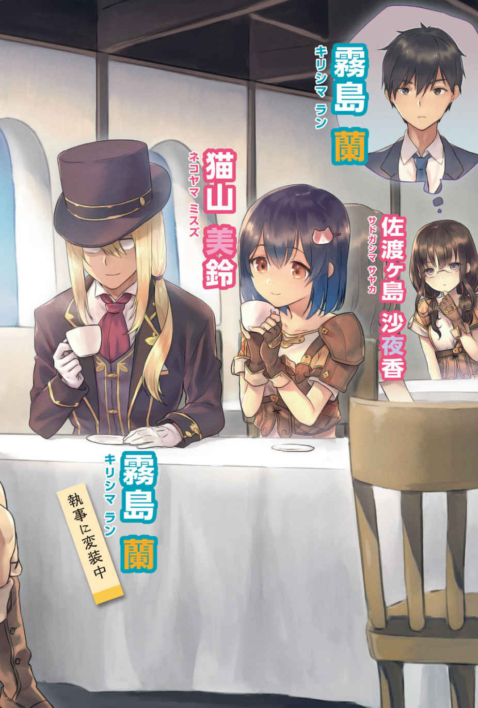
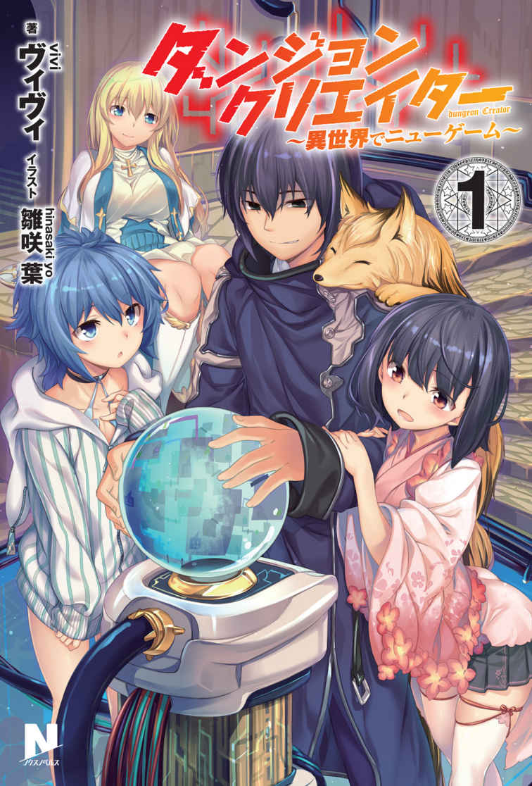

| ノクスノベルスBook03 | |
| 新双ロリス & ヴィヴィ & 百均 | |
| フロンティアワークス (2017) | |
この作品はフィクションです。
実在の人物・団体・事件などに一切関係ありません。

第１話 始まりの閃 光
耳 障 りなチャイムの音をきっかけに、深い闇 の中へ沈んでいた意識が覚醒する。
目覚めのためかぼんやりとした頭の中を掻 き回すのは、窓から差し込む柔らかな日差しと、年頃の男女による他愛 もない談笑の切れ端だ。
眩 い日差しに瞼 を焼かれ、眦 に涙が浮かぶ。
目尻から垂れた雫 を手の甲で拭 ってから、彼──霧 島 蘭 はその無個性な面差しをくしゃりと不快そうに歪 めてみせた。
未 だおぼろげな視界をごまかそうと、蘭は目元に指を当ててぐりぐりとツボを刺激する。
腕を枕に机に突っ伏していたためか、肩や腕にじんわりとした痛みが残っていた。
疲れているのだろうか。珍しく、教室で熟睡してしまった。
凝り固まった肩を回しながら、目線だけで今の時刻を確認する。
チョークの跡で薄汚れた黒板の上で、一人静かに時を刻む何の変哲もない時計。
秒針がてっぺんに辿 り着くまでじっと見つめてから、蘭は欠伸 混じりに時計から視線を逸 らす。
──ＨＲ が始まるまで、あと十分か。
それまで何をして時間を潰 そうかと、蘭は暇そうに周囲を見渡した。
学校の教室独特な温 もりの中にも、若干の涼しさを感じる秋の気候。女子同士、男子同士──はたまた異性で固まって談笑するクラスメイトは、夏服の者から冬服の者まで色々いる。
見たところ、教室にはもうほとんどのクラスメイトが揃 っているようだった。
教室の隅っこでアニメ系の雑誌を開き、如何 わしい言葉を連発しているグループもいれば、スマホ片手に甲高い声でキャハキャハと笑うギャルっ娘が、何やらふしだらな性生活に関して得意げに語っているグループもある。
いつもの光景だ。
気の合う仲間たちと触れ合い、ＨＲ開始直前の休み時間を楽しく消費する──高校生らしく素晴らしい日常だと思う。
だがそれも、クラスに気の合う仲間とやらが存在する場合だけだ。
蘭のような人間にとって、ＨＲ前の休み時間とは何よりも無駄で不必要な時間である。
今のクラスに、仲の良い友人はいない。
蘭は所 謂 、ぼ っ ち という人種だった。
昔親しくしていた友人たちは、既に他のクラスで仲の良い友人を作っている。
前にふと思い出して声を掛けにいったら、怪 訝 そうな顔で距離を感じる挨 拶 をされた。
仲の良い友人だと思っていたのは、蘭だけ──彼らにとっては、何かいつも近くにいる良く分からない奴としか、思われていなかったらしい。
──もう一度、寝なおそうかな。
ともあれ、再度熟睡して号令の際に一人だけ起立しないなんて失態をやらかせば、悪い意味で物 凄 く目立ってしまう。
どうしようかと思考しながら、机の中に仕舞った教科書を入れたり出したりしていると、ガラガラと前の扉が開き、二人の女子生徒が教室に入ってきた。
ここは共学なので、女子生徒が登校してくることなど日常茶飯事ではあるのだが。
彼女たち──その二人が入ってきた刹 那 、クラスの──とくに教室の隅でアニメ雑誌を捲 っていたオタグループの空気がガラリと変貌した。
空気の変貌に紛れ、蘭もその二人へと視線を向ける。
瞬間的な静寂に包まれた空間──その空気を作り出した張本人。だが彼女本人には、クラスの時を止めたつもりはないはずだ。
彼女が何かをしたわけではない。
彼女が登校してきたこと──それだけで、クラスの空気を変えるだけの力がある。
「ごめーん、遅くなっちゃったにゃぁ」
鈴を転がしたような愛らしい声音を奏で、てへりと舌を出す女子生徒──猫 山 美 鈴 。猫の髪飾りが似合う黒髪ボブカットを手 櫛 で梳 かしながら、彼女は小動物的な動きでクラスの中心部──クラス委員長を務めるイケメン男子や天 真 爛 漫 な陸上部女子の揃う、所謂クラス内ヒエラルキー最上位であろうグループへ何の躊躇 いもなく入っていく。
ぴょこぴょこと愛くるしい擬音を付けたくなるような仕草で、いつもの立ち位置であるクラス委員長の隣へ歩み寄り、甘えるように密着する猫山美鈴。
腕に絡みついたりなど、所謂バカップルのようなイチャイチャ行為はしないようだが、何の逡 巡 もなく年頃の男女が身体を密着させるともなれば、二人の間に何らかの感情が湧き上がっていることは間違いない。
登校してきただけで、クラスの空気を変えてしまう女子生徒──猫山美鈴。彼女は所謂、クラスのアイドルというべき存在だった。
男心をくすぐる小動物的な仕草に、容姿や噂 だけで他者を軽視したり軽 蔑 しない、純粋な心の持ち主。彼女の笑顔や声音にやられ、心を奪われてしまった男子生徒はこのクラスだけで一体何人いるのだろうか。
ちなみに蘭も、その中の一人である。
「猫山さんってば、今日も可愛 いなぁ......」
出来ることなら、毎日一言だけでも良いから美鈴とお話ししてみたい。
毎朝の挨拶だけでも良い。あの愛くるしい声音をもっと聞きたい。あの笑顔を、もっと近くで見つめてみたい。
まあ彼女の性格からすれば、蘭の願いは簡単に叶えられるようにも思われる。
美鈴本人は、話し相手がぼっちだからとかオタクだからとか、そんなことで相手を軽視したり嫌悪したりはしないし、誰にでも笑顔で接してくれる娘なので、話しかけさえすれば、きっとそれらの願いは叶えられることだろう。
ともあれ彼女が籍を置いているのは、周囲から好かれ人望も厚い──蘭と比較して様々な面で優れた人間たちのグループだ。住む世界が違い過ぎる。
あの上位集団を掻き分けて美鈴にちょっかいを出せるような人間なら、そもそもこんなヒエラルキー下位でくすぶっているはずがないし、どのグループにも属することが出来ず一人ぼっちで過ごすようなことにはならないだろう。
そんな非生産的な愚痴を脳内で零 しながら、蘭は静かに美鈴のいるグループを眺めていた。
「それにしても、猫山さんが遅刻ギリギリなんて珍しいね。何かあったの？」
「んーちょっとにゃぁ」
クラス委員長に問われた美鈴は、ポリポリと頬 を掻きながら照れくさそうに隣の女子生徒を見やる。
美鈴の隣にいるのは、ついさっき──美鈴と共に教室に入ってきた女子生徒だ。
「猫山は、わたしのことを待っていてくれたのだ。遅刻しないかどうか心配だから、ってな」
「そういえば、今日は服装検査の日だったね。僕も、先輩に鞄 の中漁 られたし」
「だって佳 奈 美 ちゃん、中々教室に戻ろうとしないんだもんにゃぁ」
「風紀委員の目から逃れようと、遅刻ギリギリで飛び込む輩 が増えたからな。終了時間が遅くなったんだ。面倒な輩の悪知恵は、全部わたしたち風紀委員の業務にしわ寄せが来る。──まったく、いい迷惑だ」
制服を押し上げるくらいに大きく育った胸の下で腕を組み、風紀委員を名乗る女子生徒──犬 神 佳奈美はふんすと鼻息を漏らす。
ＨＲ開始時間ギリギリまでお仕事とは、風紀委員も大変だなと蘭は思う。
「そーいやぁ、犬神。剣道部は、朝練とかないのか？」
「朝練は勿 論 あるが、委員会の仕事優先だ。午後はちゃんと部活には出る」
委員長とは別のイケメン男子生徒の疑問に、犬神佳奈美は凛 とした表情でポニーテールを揺らしながら答える。
ついでに制服越しのロケットおっぱいがたゆんと揺れ、周囲の男子生徒の視線が佳奈美の胸元に集束してしまう。
そういった視線は慣れっこなのか、佳奈美はとくに気にする素振りも見せず得意げに瞑 目 していた。
おっぱいの軌道を目に焼き付けてから、蘭はクラス内ヒエラルキー上位陣の集まるグループから視線を剥 がす。
あまり調子に乗って凝視していたら、流石 に気付かれてしまうだろう。
そんなことを思いつつ顔の向きを変えると、前の方の席で一時限目の予習をしている女子生徒の姿が視界に飛び込んできた。
ノートと教科書を広げ、黙々とペンを走らせる女子生徒。確かあの娘の名前は──佐 渡 ヶ 島 沙 夜 香 とか言ったか。
あまり目立たない眼鏡 っ娘で、ほんの少しだけ茶色い髪をお下げにしている大人しそうな女子生徒だ。部活も文化系で、確か茶道部だった気がする。
どういうわけか、最近彼女と良く目が合う。
一人で昼食を摂っている時や、授業中などふとしたときに、気が付くと彼女がこっちを見ているような気がするのだ。
無機質で腐りかけの青春を過ごしている蘭だが、一応これでも思春期真っ盛りの男子高校生だ。
他に好きな娘（猫山美鈴のことだ）がいるとはいえ、女の子が自分のことを見つめているともなれば思わず胸が高鳴ってしまう。
それはもうよからぬことだって考えてしまうし、ちょっぴりえっちな妄想だってしてしまう。
だって男の子だもん。
くだらないことを脳内でぼやいていると、不意に佐渡ヶ島沙夜香がチラリとこっちに向かって視線を泳がせるのが分かった。
さりげなく、こっそりと。教科書を見る振りをしながら、ゆっくりと彼女の顔が蘭に向かう。
暫 しの間こっちを見つめてから、またすぐにノートにペンを走らせ始めた。
純粋でもどかしい行為に、蘭は思わず席から立ち上がろうとする。
これはもう間違いないだろう。声をかけて、アドレスでも聞けば夜にでも連絡が来て、そのままリア充路線まっしぐら──と、こう来るに違いない──。
「......なあ。佐渡ヶ島さん、さっきこっちの方見てなかったか？」
だがそんな蘭の思いは、背後にて紡がれた言葉に無慈悲にも砕かれた。
上げかけた腰を下ろし、耳を澄ませる。
「確かに、間違いなくこっち見てたな」
「実は最近さあ、授業中とか昼休みとか、結構彼女の視線感じることあるんだよね」
「マジかよ、やったじゃん」
男子生徒三人の会話が耳に入り、蘭はつまらさそうに吐息を零す。
危なかった。調子に乗って舞い上がり、身の程知らずにも彼女に声なんてかけていたら、どうなっていたことか。
明日にはきっと、勘違いぼっちだとか自意識過剰くんだとか、考えるだけで胃の奥が重くなるような蔑称を付けられていただろう。
最近は無料通話アプリだとか、ＳＮＳだとか、メール以外にも不特定多数の知り合いと連絡を取り合う技術が進歩しているらしい。
クラスのグループなんかで晒 し上げられたら、蘭の勘違い行動は一瞬でクラス中に広まってしまう。
ちなみに蘭は、そういったアプリやＳＮＳを使ったこともなければ、一緒に使おうと誘われた経験もない。
人並みに青春を謳 歌 している人間から見れば、もしかして蘭はいじめを受けているのではないかと思うかもしれないが、決してそのようなことはない。
「暇だな......」
湧き上がった情動が一瞬で鎮火し、冷え切った瞳で窓の外を眺める。
ＨＲ開始まで、あと少し。
面倒な時間を潰すことが出来たことに目を細め、透き通るような青空を視界に捉える。
降り注ぐ日光が眩 しく、腕で瞼に陰を作った刹那──霧島蘭は、異変に気が付いた。
今朝の日差しは、明らかに眩し過ぎる。
まるで、すぐ近くで光を放っているような──。
違和感が確信に変わった瞬間、視界が弾 けた。
「──う、わ！」
──ビッグバン。
蘭が最初に思い浮かべたのは、宇宙の誕生にも匹敵するであろう強烈な閃光だった。
辺りからは悲鳴や怒号が飛び交い、憂 鬱 な朝の始まりを乱雑に掻き乱していく。
一瞬で周囲は真っ白に染まり、瞼越しの瞳が焼かれるような強い光に覆われた。
次に彼を襲ったのは、凄 まじい力で吸い上げられたような、嫌な浮遊感だった。
このままでは天井にぶつかってしまうと身構えたが、その浮遊感は次の瞬間にはもう消えていた。
同時に、周囲を塗り潰していた真っ白な閃光もかき消された。
太陽でも落ちてきたのか。
それとも、何かの爆発に巻き込まれたのだろうか。
どちらでも構わないが、霧島蘭は早く家に帰りたいなと思っていた。
月曜日──それも授業が始まる前の、憂鬱な朝。
そんな時間帯に、何だかよく分からない事件に巻き込まれたのだ。
きっと職員会議だとかで、本日の授業は全て潰れるだろう。
もしかすると、ここ数日臨時休校なんてことにもなるかもしれない。
どうせそうなるのなら、早く帰らせてほしい。
あまりぐずぐずしていると、電車やバスも止まってしまう。
そんなことを考えながら瞳を開けた蘭は、辺りに広がった光景に言葉を失った。
「──え？」
今時珍しく、壁紙も張っていない石造りの壁面。
絨 毯 も敷かれていない、同じく無機質な石造りの床。
そのような場所に、見慣れた制服──蘭の通う高校の制服だ──を身に着けた男女が、二十人近く転がっている。
一番近くに転がっている女子生徒など、スカートが捲れ上がり刺激的なパンツが見事に露出していた。
布面積の少ない、水色の下着だ。見せパンではないらしく、尻の形がくっきりと浮かび上がっている。
せっかくなので、目に焼き付けておく。
意図せぬ絶景に手のひらを合わせてから、蘭は再度周囲を見渡した。
どうやらここに転がっている男女は、蘭と同じ高校──同じクラスのクラスメイトのようだ。
だがどうやら、クラスの不良共はほとんどいないようだ。
元々そういった奴らは、月曜日の朝から教室にいるような人達ではない。
とくに今日は、風紀委員の服装検査がある日だ。わざわざ時間通りに来て、注意を受けようとは思わないだろう。
あの高圧的な声や振る舞いが苦手だった蘭としては、内心ホッとしてしまったのだが。
問題は、そこではなかった。
「......ここ、どこだよ」
蘭の記憶が正しければ、彼はさっきまで高校の教室にいたはずだ。
授業開始直前の朝の休み時間という、何よりも無駄な時間を怠 惰 に消費していたはず。
「何が起こったのかさっぱり分からねえ」
言いつつも、蘭の中ではおぼろげだが、何となくの答えは浮かんでいた。
普段と変わらぬ日常生活から、突如意味の解 らない生活へ放り込まれるこの状況。
ネット小説などで人気の、所謂異世界転移というやつではないだろうか。
「それも、クラス転移ってやつかな。原因は分からないけど」
ただ周囲の石壁は人工的な風味がする。
どこかに転移したというよりかは、誰かに召喚されたと考えた方が無難かもしれない。
「でもこういうのって、全員が目を覚ますまで当事者が現れないお約束なんだよな」
友人がいればそいつを起こし、連鎖的にクラスメイトが目覚めることになるのだろうが、蘭はその最初のきっかけになることは出来なかった。
とはいえこのまま放置しておくわけにもいかない。
仕方がないので、一番近くで気を失っている水色パンツの女子生徒に声をかけることにする。
「いやしかし、興奮──じゃなくて、緊張するな」
何 故 高校に、これほどまでに刺激的な下着を身に着けてくる必要があるのだろうか。
下着なんて見せるもんでもなかろうに。
それとも蘭が知らないだけで、今時の高校生というのは普通に教室で愛し合ったりするのだろうか。
爆発しちまえよと思う。
「おい、大丈夫か？ えーと......。猫山さん！ 猫山美鈴さん！」
危うく水色さんって呼びそうになったが、そこはまあ関係ない。
水色の下着を堂々と見せつけながら気を失う少女──猫山美鈴は、「ふにゃぁぅ」などと変な声を上げながら、うつ伏せから仰 向 けに寝返りを打った。
スカートが捲れたままそんなことをしたため、今度はもっと大事な部分が下着越しに透けて見えた。
剃 ってるのか、目を凝らすと割れ目がくっきりと見える。
密 かに想いを寄せていた女子生徒のおま○こを間近に感じ、蘭は興奮を隠せない。
何て大胆な格好だろうか。まるで、よからぬことを考えた男子生徒を誘っているかのようだ。
このまま犯しても文句は言われないんじゃないか。
色々な思いは浮かんでくるが、それを行動に移すほどの度胸は蘭にはなかった。
だがここまで刺激的な姿を見せられ、何もせずに無視するってのも勿 体 ない。
他の奴らはまだ目を覚ましていないみたいだし、少しくらいなら大丈夫だろう。
「ねーこーやーまー......さんっ！」
「ひゃにゃぁん!? 」
高校生しては若干控え目な胸に、容赦なく手のひらを押し付ける。
思ったより柔らかい。
やってから、これって犯罪なんじゃないか、と頭の中を過 った。
いや、これは犯罪じゃない。役得だと自分に言い聞かせる。
寝起きの悪い人間を、身体に触れずに起こすのは不可能なことだ。
胸以外にも触るところがあるだろうと言い張る脳内の天使は、この際無視する。
「ん、にゃぁ？ あれ？ も、もう朝？ あれ、でも暗くない？ カーテン閉めたままだったかにゃぁ？」
どうやら胸を揉 まれたことは気付いていないらしい。
遅れてホッとする。
「猫山さん」
「あー、霧島くぅん。私、どうしちゃったんだっけぇ？」
にゃははと八重歯を見せ、猫山美鈴は照れくさそうに頬をかく。
語尾や動きからぶりっ子臭がすごい勢いで漂ってくるが、これらは全て計算し尽くされた誘惑行動とは違う。
これが、彼女の素である。
勿論嫌う人は嫌うが──とくに女子に多い──蘭のクラスのオタっぽい集団からは人気が高かった。
とくにこの猫山美鈴という女子生徒は、見た目や性格で他人を軽視したり差別したりしないのだ。
ヒエラルキー最下層の男子集団とも、仲良く話す。
ちなみに蘭が元の世界で唯一言葉を交わした女子生徒でもある。
「覚えてないの？」
「にゃぁー......、変な光に包まれたところまでは覚えてるんだけどねぇ」
言いながら身体を起こし、背中やスカートに付着した埃 を払う。
そして周囲をぐるりと見渡し、再度蘭の方を見た。
「こ、ここはどこなの!? っていうか、何で皆寝てて......。えぇ!? 」
フシャーと叫び、倒れている生徒たちに駆け寄っては、身体を揺さぶり始めた。
猫山美鈴に揺さぶられ、目を覚ます生徒たち──総勢、二十一人。
毎日遅刻してくるヤンキー集団数名と、いじめが原因で不登校になったデブス女子が一人、ここにはいない。他の生徒は、全員この場所に転移されたらしい。
ネットで良く見るクラス転移とは異なり、担任教師などは転移していない。
朝早かったから、まだ教室に来ていなかったのだ。
ざわめき、怒号、泣き声、叫び声──様々な声が辺りを行き交う。
すぐ暴力に出る輩がいなかったのは良かったが、やはりこの閉鎖的な空間は良くない。
カースト最下位のオタ集団は、互いに身を寄せ合ってブルブル震えている。
うち一人は、何 故 かニヤニヤと笑っている。
大方、蘭と同じく、クラス転移という言葉を思い浮かべたのだろう。
「どういうことだよ、これは！」
「分かんないわよ！」
クラス委員長の嘆きに、不良少女（一人残っていたらしい）が怒声で返答する。
あちこちで同じようなことが起きており、怒声が飛ぶたびに一部の女子たちが泣き崩れる。
泣いたって状況は良くなんねえだろ！ と、不良女子が壁を蹴りながら怒鳴る。
召喚主が来るより先に、クラスが崩壊しそうだなと、蘭は他 人 事 のように思っていた。
だがそんな考えも、次の一言で霧散する。
「国王様！ こちらです！ どうやらこっちに召喚されていたようです！」
クラス転移もののお約束──召喚主殿のご登場だ。
先ほどニヤニヤしていた男子生徒が、小さくガッツポーズをする。
どうせ自分だけチート能力を貰 って、クラスの女子や異世界の美少女でハーレムを作る妄想でもしているのだろう。
「召喚魔法陣の座標指定を間違っていたらしい。いや危なかった。もう少しずれていたら、壁の中に生き埋めにしてしまうところだったよ」
暗闇の中から姿を現した、マント姿の男性。
何かさりげなく恐ろしいことを言っていたような気がするが、蘭は無視する。
そんなところを突いても何の得にもならない。
「国王様、召喚は成功しておりました！ ──二十一人、全員揃っております！」
「そう、か......」
マント姿の男性に続いて現れたのは、恰 幅 の良いいかにもな王様──ではなかった。
その姿は、まさに骸 骨 。骨と皮だけになった細腕で杖 を突き、騎士たちに肩を借りながらここまで歩いてきたらしい。
ただ痩 せているようではなさそうだ。病気──いや、何かもう少し深刻なものなのではないか。
「国王様は、残酷な呪いに侵されている！」
何か全部説明してくれそうなので、蘭は黙っておくことにした。
他の生徒たちは、何が起こったのか分からず茫 然 と立ち尽くしている。
余計なヤジとか暴言を投げ込むような輩はいないようだ。
「魔王による呪いだ。この呪いは、魔王がこの世に生を受けている間、延々と続くものである！」
「............」
「我らはなんとかして魔王を打倒しようと試みたが、如何 せん全て失敗した！」
「............」
「そこで我らは、異世界より勇者──聖 徒 と呼ばれる戦士を召喚し、魔王打倒のために──」
長かったので纏 めると、簡単なことだった。
数年前、国王様が魔王による呪いを受けた。
その呪いを解くには、魔王を倒さなければならない。
だがこの世界の住人では、魔王には敵 わなかった。
この世界の人間では不可能──ならば、別の世界から戦力を掻き集めれば良い。
この世界には召喚魔術というものがあり、異世界から人間を召喚出来る。
それを利用して、戦力を整えようって話らしい。
何というか、自分勝手な話だ。
勿論これに対して、血気盛んな生徒たちが聞くに堪えない罵 詈 雑 言 を喚 き散らした。
だがマントの男性も国王とやらも近 衛 騎士も、それらの暴言は軽く聞き流していた。
慣れてるって感じだ。他人の人生をどうとも思っていないその思考回路に虫 唾 が走る。
だが──。
怒りを爆発させる生徒たちの中に、ただ一人──笑いを堪 えているような者がいる。
先ほどのオタ男子は眼鏡をくいっとしてから、いかにも犯罪者っぽい笑顔でビシィッと手を上げた。
視線の集中砲火を浴びるが、彼は全く気にしていない。あれだけ堂々と出来るのなら、普段からそうすれば良いのにとも思うが。
「召喚者さん。一般人である僕たちには、戦う術 がありません。そんな人たちを何人召喚しても、状況が好転することはないのではありませんか？」
蘭は、このオタ男子の考えていることが何なのか理解した。
戦う術のない自分たちを召喚して、どうするつもりか。
これは別に、召喚されたことに嫌悪や憎悪を感じているわけではない。
その後に続けられるであろう言葉を、待っているのだ。
勿論この台詞 の後に返される内容は、一つしかない。
「無論、我らもそれは承知の上だ。聖徒諸君には、一人一人──戦うための能力と、この世界の言葉を理解して使用するための翻訳魔術を施しておる」
オタ男子は、ニヤつきながら再度ガッツポーズ。
周りから白い目で見られていることには気づいていないらしい。
「そうですか、ではその能力とやらは、どうやって扱えばよろしいのでしょう！」
「簡単だ。体内に巡るエネルギーを活性化させ、念じろ。さすればすぐに、施された能力を知ることが出来るだろう」
「分かりました、いざ！」
オタ男子が何やら念じると、ポッと頭の上に何やら文字が浮かび上がった。どうやら自身に施された能力は、他者からも確認することが出来るらしい。
ちなみに、颯 爽 と念じたオタ男子の頭の上に浮かんだ文字は。
『鑑定』
「うっそだろぉぉぉぉぉぉぉぉぉぉぉぉぉぉぉ──!?」
巷 のチート主人公ならデフォルトで所持しているハズレスキルを手にしたオタ男子は、頭を抱えてその場に蹲 ってしまう。
自ら道 化 を演じることになってしまったオタ男子に、周囲から憐 れみの視線が柔らかく突き刺さる。
流石に指をさして笑うような者はいないが、何となく──張りつめ、憤 怒 や憎悪に塗 れていた空気が若干緩和したような気がしてしまう。
オタ男子には不幸な話だったが、空気の温度が変わったという点ではこの展開は僥 倖 だったかもしれない。
自分ではなかったことに安 堵 の吐息を零してから、蘭はオタ男子と同じように、体内に巡るエネルギーとやらを活性化させ、念じた。
「......ねえ。これって、絶対にしなくちゃいけないことなのかにゃぁ」
「僕だって、今日会ったばかりの誘拐犯のために生命 を賭 けて戦うなんて嫌だけど......。この状況で逆らったらどうなるか、分からないし」
不安げに俯 く猫山美鈴を、クラス委員長──虎 生 茂 信 が腕の中に抱きしめる。
男女ともに好かれるイケメン委員長に抱きしめられた美鈴は、幼気なその面差しをふにゃりと緩め、頬をほんのりと赤く染めてしまう。
「これからもし、どんなに辛いことが降りかかったとしても──僕は絶対、美鈴を護 る。生命を賭けてでも、美鈴のことを護ってあげる。だから、心配しないで」
「虎生くん......」
キュンっと、美鈴の瞳に淡いハートマークが浮かぶ。遠慮がちに虎生の制服の袖を摘 まみ、胸板に顔を摺 り付ける。
視界の端にそんな光景を視認した蘭は、スキルを念じながらギリリと奥歯を噛 みしめた。
手の届かない存在だとは重々承知しているが、流石に嫉 妬 してしまう。
胸中を渦巻くこの不快な感情が、見苦しく独りよがりな単なる嫉妬心だということは分かっているので、二人の関係に水をさそうとは思わないが。
「......しかも、いったいぜんたい俺の能力は何だっていうんだ」
『眷属調教 』
周囲のクラスメイトが次々に戦闘特化のスキルを開花させていく中で、蘭は自身に施されたスキル名を口の中で反 芻 する。
眷属調教──。能力自体は、魔物などを従属させ、下僕として扱うことの出来るスキルらしい。
だが名称と──とくにルビが大変なことになっている。
ルナティック・セクシャル。直訳すると、狂気じみた性的野郎って感じだろうか。
周囲からの視線が痛い。
鑑定を引き当てたオタメガネとは違う意味でのものだ。
女子からはヒソヒソと変な目で見られ、男子からも「うわぁ、ないわぁ」とでも言うような目を向けられている。
「ほほぅ、これはこれは霧島君。君はなんて汚らしい能力を手にしたんでしょうなあ」
叩 く相手を見つけたとばかりに、鑑定オタメガネは蘭に向かってビシィっと指をさした。
嫌悪感たっぷりにそれを睨 みつけてやるが、鑑定オタはやれやれと肩を竦 めて。
「しかもその能力は、女性にしか通用しないらしいじゃないですか。君は健 気 な女子生徒を眷 属 化させて、調教して、どうするつもりなんですかねえ？」
周囲からの視線が、一層嫌なものへと変わる。だがその視線が向けられているのは、蘭だけではない。鑑定オタにも、同じような視線が向けられている。自業自得だろう。
「僕のように直接の戦闘には向かない能力ならともかく。仲間たちに害を与えるような能力を授かる──いただけませんなあ」
眼鏡をくいっとやりながら頷 くその姿は、様になっている。無論、嫌な奴という意味でだ。
「君とは一緒にいたくありませんなあ。どう思います、女子生徒の皆さん？ 寝ている間に、エロ同人みたいな展開にされてしまうかもしれないのですよ」
エロ同人って......。
突っ込みたかったが、ここで何かを言っても状況は好転しない。
眷属調教などといった能力を手にした事実は変わらない。
もし蘭に巧みな話術があったとして、ここは切り抜けられたとしても、始終恐れや怯 えの目で見られ、居心地が悪くなるだけだろう。
「おい、女 ヶ 根 ！ 流石に言い過ぎだ！」
先ほど女子と衝突していたクラス委員長、虎生が鑑定オタ──女ヶ根の肩に手を置く。
ちなみに虎生の所持する能力は、虎化 。肉体の一部もしくは全体を、虎の姿へと変貌させるスキルである。名は体を表すとは良くいったものだ。
虎生は、曲がったことが大嫌いな好青年 である。心も身体も真 面 目 で真っ直ぐな彼は、男女ともに人気が高い。
無論男子からの人気には、恋慕は籠 っていないが。
「虎生......」
そうだ。虎生なら、理不尽かつ不条理な理由で悪者扱いされている蘭を、どうにかしてクラスに留 めようとしてくれるだろう。
自分とは全く関係のないことで、蘭は今クラスメイト全員から総スカンを喰 らっているのだ。
こうなった原因は、霧島蘭本人にはない。与えられた能力──眷属調教がいけないのだ。
「霧島」
「......虎生」
助けてくれてありがとうと、手を伸ばしかけた。
だけど──。
「悪いが、このクラスから出て行ってくれないか」
伸ばしかけた手は、無残にも引っ叩 かれた。
差し延べられた手を引っ込められたような、暗い感情。
そして嘲 笑 われたようなみじめさと不快感。
「ど、どうして......」
「君がいると、女子たちが怯えてしまう。それはいずれ、戦意や結束力の欠如として現れるだろう。団結が崩れるのは、どうしても避けたいんだ。それに──」
虎生は、背後にて佇 む猫山美鈴を見やった。
「僕の彼女──猫山さんに手を出されでもしたら、堪 らないから」
「──っ、待てよ！」
文句を言って掴 みかかろうとしたが、虎生の剛腕によって蘭の身体は後方へぶっ飛ばされた。
蘭を殴った腕は、人間のそれとは比べ物にならない太さだ。
黄色に黒字の縞 々 。不幸人間に恋をした宇宙人が身に着けていた、ビキニの柄にそっくりなそれは、部分的に虎化した、虎生茂信の腕だった。
僕の彼女──だと。
猫山は──あの天使のような猫山美鈴は、虎生の彼女だと？
あの誰にでも優しくて、健気で可愛らしい猫山美鈴が、虎生の──。
あの水色の刺激的な下着は、虎生のために穿 いてきたとでも言うのかよ！
──いや、分かっていた。
美鈴と虎生の距離感が、単なる友人関係にしては近すぎるということも。
だがどうしても、心のどこかに──それを認めたくないという傲 慢 な気持ちがあっただけだ。
幼気で愛くるしい、マスコットのような彼女が、誰かのものになっているという現実を受け止めることが出来なかっただけ。
クラスでも重要度の低い、休み時間はいつでも寝たふりをしている蘭に対しても、猫山美鈴は、他のクラスメイトと接するのと同じように、笑顔で声をかけてくれた。
「団結が崩れるのが嫌だって、今お前言ったよな」
「言ったが。それがどうかしたか」
「初 っ端 ──まだこの世界がどういったものか分からない時点で、仲間 だった奴を捨てて、何が団結だよ！ 何が結束力の欠如だ！」
ややこしい世界に無理矢理召喚されたこと。
生命を賭けて戦うことを前提に進められているこの空気を、蘭を含め誰一人として正そうとしないこと。
そして何より──思春期の男の子としては、何よりも辛く屈辱的な事柄であろう──同級生の女の子たちの目の前で、スキルを悪用して節操なく女子生徒を犯す変態だと決めつけられたこと。
さらには、大好きな女の子の目の前で、その娘の彼氏によって無様にぶん殴られたこと──。
まだ完璧には精神の成熟し切っていない男子高校生には処理し切れない程の怒りや悲しみが渦巻き、胸の中を掻き毟 る。
その情動から逃れようと、頭に浮かぶ限りの暴言を放ってしまう。
そしてそれは──この場では正しいことを言っているであろう委員長──虎生に向かって放たれる。
自分はこんなに激情的な性格をしていただろうか。
感情に任せて余計なひと言をぶちまけるような、そんな性格をしていただろうか。
蘭の怒号に、女子生徒の怯えが一層激しくなる。
男子生徒までもが、嫌悪感たっぷりな目で蘭を見る。
やめろやめろ、やめろやめろやめろ！
そんな目で、見るんじゃねえ！
そんな目で、見ないでくれよ......。
「もうやめとけよ。虎生はクラス委員長であって、てめぇのサンドバッグじゃねーんだ。八つ当たりしか出来ねぇ無能は、虎生の言う通り出て行った方が良いんじゃねーのか？」
蘭を非難するかのように、ヒエラルキー上位に位置するもう一人のイケメン男子が、二人の間に割り込んだ。
蘭の排斥に同調するようなその言葉に、蘭は彼を睨みつけるが。色々なことが重なり憔 悴 しきった蘭の瞳からは、覇気や精気が失われていた。
──殴られたことに対する八つ当たりだ。
──ぼっちの癖に、プライドを保とうとしてるんじゃない。
──見苦しいし、醜い。
──そこまでして自分たちと同じ場所にいたいとか、やっぱり犯す気満々じゃないか。
コソコソと、仲間内で話している声が耳に入ってくる。
女ヶ根英 一 に対して向けられていた憐れみの視線が、嫌悪や不快となって蘭に向かって突き刺さっていく。
だが蘭だって、ぼっちとはいえ立派な男の子だ。意地もあれば、プライドだってある。
折れかけたボロボロの精神を奮い立たせ、俯いた顔を前へ向ける。
最後の力を振り絞って、虎生含めクラスメイトと向き合う。
「スキルを羨 んでるのか本気で怯えてるのか知らねーけど、勝手に吊 し上げてるんじゃねーよ......。出て行けとか、お前らに言う資格はないだろ。俺らを召喚したのは、王国の人間──そうだろう？ 俺のスキルは、この人たちから必要とされている。だから──」
偽りの勇気で心を叱 咤 し、無理矢理にニッと笑顔を作る。
「俺には、この場所に残る理由がある」
「──いや、ないな」
間髪入れず差し込まれた、非道な言葉。
真っ向から存在を否定された蘭は、思わず言葉を失ってしまう。
蘭の虚勢は崩され、虚偽の笑顔が──消える。
「眷属調教？ そのようなスキルが施されるような魔法陣を描いた覚えはない」
「──でも、事実俺は召喚されている！」
一 縷 の望みに縋 り、震える声でしがみ付く。
意地もプライドも、既に崩壊していた。
「どうした、のだ......。何か、問題でも生じた、のか......？」
「国王様。いえ、何でもございません。ちょっとした手違いがあっただけでございます。──すぐに片付けますので」
片付ける──その言葉で、蘭の心を繋 いでいた最後の糸がプツンと音を立てて切れた。
訳も分からず総身が痙 攣 し、顎 がガタガタと恐怖の音階を刻み始める。
思わず膝から崩れ落ちた蘭の肩に、生ぬるい手を置く者が一人。
「とら、お」
「大丈夫、取り乱す必要はない。全てが片付いたら呼んであげるから。魔王を倒して、帰る時が来たら──。霧島も、ちゃんと連れて帰──」
「......うるさい」
連れて帰る。
何だよ。それって、お前はお荷物ですって言ってるようなものじゃないか。
眷属調教は、魔物やら何やらを従属させて下僕にする能力だぞ。
もし今後魔王打倒の旅に行くとして、無数の魔物に襲われたら、誰が護ってくれるんだ。
それこそ、霧島蘭の出番なのではないか。
だけどもう、こんな奴らのために自分の能力を使うのは嫌だ。
「もう良いよ......。お前らなんて、頼 んねえから」
確かに蘭は、クラスでも重要度の低い空気人間だったかもしれない。
体育祭や球技大会など──クラスで団結するべく場面でも、心の距離感を測りあぐね、一歩引いた場所にいたかもしれない。
それでも──それでも蘭は、蘭なりに、一生懸命クラスに溶け込もうと努力していた。
だがそれも全て、蘭の思い上がりだったことがここではっきりしてしまった。
与えられたスキルがどうとか、感情に任せて虎生に汚い言葉を叩きつけたこと以前の問題だ。
蘭は、クラスメイト──この場にいる人間全てから、いらないと判断されてしまった。
眷属調教は危険なスキルだから。眷属調教は魔法陣の誤作動による異常なスキルだから。眷属調教を持った男子生徒が傍 にいると、女子生徒が怯えてしまうから──。そんなもの、単なる後付けの言い訳に過ぎない。
危険なスキルを与えられたのが、蘭だったから。女性を洗脳するスキルを与えられたのが、他でもない蘭だったから。
蘭でなければ──もし与えられたのが虎生など、クラスメイトからの信頼も厚い健全な生徒だったら。
恐怖を覚えないとまではいかないものの、きっと集団から排除しようなどと、このような空気になることはなかっただろう。
クラスにとって、不必要な──クラスメイトの誰からも必要とされていない、無価値で最底辺な蘭が、女子生徒の生活を脅 かす危険なスキルを手にしたから、こうなってしまった。
この場にいる全ての人間に背を向けて、蘭はゆらゆらと歩き出す。
もしここで、蘭を必要としている──蘭を友人として大切に思ってくれている人間がいれば。蘭を一人のクラスメイトとして──、現代日本の学校生活を象徴すると言っても過言ではないだろう、何となくの多数決による、なあなあな空気を打ち破ってでも、蘭をクラスに留めたいと考えてくれるような、本 当 の 友 達 がいてくれたなら。
きっと、こんなことにはならなかっただろう。
辛い。先週まで同じ教室で共に学び、共に過ごした奴らからハブられる。
今までの、空気系ぼっちとは違う。これが、クラスから排斥されるってやつなのかなと。
「............猫山さん」
クラス中の悪意が蘭へ集束していることに戸惑いを感じているのか、美鈴は困ったような表情で、蘭と虎生とを交互に見やっていた。その表情に、恐怖や拒絶の色は微 塵 も浮かんでいない。
胸を揉まれたことに気が付いても、そのことに関して言及しない。冗談でも、「下着見た？」とか聞いてこない。クラスカースト最下層の蘭に対しても、普段と変わらぬ笑顔で接してくれた猫山美鈴。蘭は、彼女のことを──。
「いや、これ以上を口に出してはいけないか」
思っても、口に出してはいけない。
口に出すと、満足してしまうからだ。
言わず、ずっと溜 め込んでから──、口先だけじゃなく、行動に移せば良い。
泣き寝入りだけは、絶対にしない。
暗く長い回廊を、霧島蘭はゆっくりと歩いて行った。
その胸に封じ込めた、決して砕けぬ復 讐 心に、誰も気が付くことはなく。
※この続きは製品版でお楽しみください。

プロローグ
この世の摂理は弱肉強食であり、持つ者が持たざる者から搾取して成り立っている。俺、黒 崎 祐 也 は搾取される側だ。そもそも俺は父親の不倫で生まれた。それでも、母と二人で苦労はしていたが、それなりに楽しく暮らしていた。しかし、八年前に母が亡くなり、身寄りがなくなったことで事態は急変した。
身寄りのなくなった俺はこの辺り一帯の大地主である父親に引き取られた。最初は新しい家族と仲良くなろうと思い、様々な努力をしてきた。しかし、相手にその気はなく、日に日に扱いが悪くなっていった。
家では家事全般をさせられ、遅ければ躾として義理の母親や義理の妹に殴られる。普通なら助けてくれる父親も、妹達と一緒になって憂さ晴らしに暴力を振るってくる。酷い時は画鋲を爪の間に刺されたり、煙草の火を押し付けられたり、鞭で叩かれたりする。
このまま行けば遠からず死ぬことになるだろう。今すぐにでも自殺すれば楽なのだろうが、母さんの分まで生きると約束したし、自殺はできない。自殺などしたら、俺に保険金を掛けているあいつらを喜ばせるだけだ。
でも、どうにかしないといけない。逃げるにしても海に囲まれた島なのでお金と船が要る。結局、現状ではどうしようもなく従うしか選択肢がない。
「ほら、糞兄貴。アンタに人間の食事なんてもったいないわ。犬みたいに這 い蹲 って食べなさい」
綺麗な黒髪を腰の辺りまで伸ばし、染み一つない生まれたてのような綺麗な肌で、整った顔を持つ妹の友 理 奈 が容赦なく鞭を振るってくる。大きな瞳からはまるで生ゴミでも見るような視線が飛んでくる。日頃の鬱 憤 を晴らすかのように楽しそうに蹴ってくる。
「ぐっ!? 」
服を脱がされた状態で身体中を妹に鞭で打たれる。両親に殴られた場所も容赦なく叩かれる。そんな状態で床に置かれた皿に盛られた残飯に頭を押し付けられ、頭の上に足を乗せられる。どんなに惨めでも食べないと生きていけないので必死に食べる。
「こんなのが兄だなんて、本当に最悪ね。さっさと死んでくれない？ ねえ、聞いてる？」
「がぁっ!? 」
腹を蹴られて床を転げまわる。そのまま蹴られて部屋の隅に追いやられ、妹の友理奈が飽きるまでひたすら蹴られる。飽きたら庭に繋がる大窓を開けられ、そこから蹴り落とされた。
「ああ、水をあげてなかったわね」
友理奈は花瓶から花を取って俺に近付き、髪の毛を掴 んで上を向かせて無理矢理水を飲ましてくる。大量の水が飲みきれずに唇の端から零 れ落ちる。
「ちゃんと飲みなさいよ。そんなこともできないの？ 本当に生ゴミね」
残った水を頭から掛けられ、そのまま放置される。水と冷たい風が傷に響く。少ししてから身体の中から襲ってくる痛みに必死に耐えて起き上がる。庭の隅に設置されている蛇口に取り付けたホースを使って身体を洗っていく。そうしないと酷い臭いがしてしまう。臭いを理由にまた折檻されるのは目に見えているから、痛みを我慢する。
洗い終えてから庭にあるプレハブ倉庫へと向かう。俺は家に入ることを基本的に許されず、ここで生活をしている。本当に最低限の生活だが、耐えるしかない。
俺の生活は学園でも変わらない。昼休み前の授業が終わる直前に購買部へと走る。自前の金で、パンや唐揚げ、フランクフルト、ジュースなどを買って友理奈達に届けないといけない。逆らうと殴られたり、蹴られたりするからだ。もっとも、言うことを聞いていても暴力を受けることになる。どちらにしろできる限り暴力を受けない為に、汗だくになりながら廊下を走るしかない。
「あっ！」
「きゃあっ！」
急いで曲がり角を曲がると、さらさらと風に靡 く銀糸のような髪の毛をツインテールにした現実にはいないような少女がいた。白く綺麗な肌をして、まるで天使のように可愛らしい。一瞬見とれてしまって、慌てて避ける為に無理矢理体勢を変えようとする。だけど、間に合わずにそのまま転んでしまう。抱えていた大量のパンやジュースの缶を放り出してしまい、辺りに散乱してしまった。
「だ、大丈夫ですか......？」
「あっ、あぁ......大丈夫」
慌てて落ちている物を拾っていくと彼女も拾ってくれる。
「遅いと思ったらこんな所で何してるんだよ！」
慌てて声のした方を見ると妹の友理奈とその取り巻きの河村鉄也や、稲木順、粥 川 幸司が向こうから一緒にやって来た。
「パシリもろくにできねえのか、このクソがっ!! 」
「がぁっ!? 」
河村の膝が俺の腹へと命中し、激痛に襲われて廊下をのたうち回る。そのまま何度も蹴られて胃液を撒き散らかす。
「まったく、汚いわね」
友理奈に頭を踏み付けられ、足をグリグリ捩 じるようにされ、地面に押し付けられた肌から伝わってくる痛みに呻 く。それがしばらく続き、意識が朦朧としてくる。
「それで、アンタは何をしてんのよ？ アタシは課題をしておけって言ったわよね？」
「わ、私は......と、トイレに行こうと思って......」
「そう、それなら丁度いいわ。粥川、河村、糞豚を運びなさい。稲木は拾っておきなさい」
「うっす」
「「了解です、友理奈様」」
周りが暗くなってきて、自分でも意識を失っていくのがわかった。
● ● ●
「ほ、本当にする......の？」
「そうよ。やりなさい。それとも犯される方がいい？ 私はどっちでもいいわよ」
「いっ、いやっ!! 犯されるなんて絶対嫌っ!! 」
何を話しているかはわからないが、声が聞こえてきた。慌てて目を開こうとするが、目隠しをされているのか真っ暗で何も見えない。次に腕を使って起き上がろうとするが、縛られているのか動かすことができない。しかも何かを口にいれられていて閉じられない。
「ふがっ!? んっ、んんっ!! 」
「あら、目覚めたようね。ほら、さっさとなさい」
「わ、わかっ、た......ごっ、ごめんなさい......」
聞こえてきたのは先程の少女の声だった。彼女の声が聞こえてくると身体に何かが書かれているのがわかる。
「ほら、しっかりと書きなさい。貴方 達も」
「おう！」
「何書こうか」
直接肌に何かを書かれ、暴れると殴られる。殴られたことで目隠しが取れて周りの景色が目に入ってくる。周りを見る限り、和式便器に頭を入れられ、裸にされた上に両足を広げた状態で両手と一緒に縛られていた。頭をあげて身体を見ると卑 猥 な言葉が沢山書かれている。
「おい、これネットにあげてやろうぜ」
「いいかもな」
そう言って、写真を撮っていく。
「や、やめろっ!? 」
「誰がやめるかよ！」
「明日から有名になれるぜ？ 感謝しろよ」
声を荒げようとしても、蹴られて黙らされる。身体中を襲う痛みに大人しく時間が過ぎ去るのを待つしかない。
「ネットにアップするのはやめなさい。それよりも、リーゼも撮りなさい」
「そ、それは......可哀想......」
「何？ アンタもやられたいの？ その方がこいつらも喜ぶでしょうね」
「と、撮るから......」
全員から写真を撮られる。
「そうだ。リーゼ、可哀想って言ったわよね？ だったら、これで消してあげなさい」
「や、やめて、やめてくれっ！」
友理奈が少女に渡したのは掃除用のデッキブラシだった。
「ご、ごめんなさいっ！」
「あぁぁああああああぁぁぁぁっ!! 」
「落ちないわね。洗剤をしっかりとかけないと駄目ね」
「ぎゃぁああああああああああああぁぁぁぁっ!? 」
傷に洗剤がしみこみ身体中に襲い掛かる激痛に意識を失った。
● ● ●
ずぶぬれになった制服を着て帰宅する。
「まぁ......」
「くすくす」
水浸しの制服を通行人に見られ、指を指される。そんな中、殴られたり蹴られたりして身体中が痛いのを我慢してどうにか家に帰ることができた。家には直接入らずに庭にある水道で身体を一気に洗う。俺は家の中に勝手に入ることを禁止されているので、ここで洗うしかない。
服を脱いで身体を水で洗ったら庭に作られたプレハブの倉庫へと入って服を着替える。着替えた物は桶に水を溜めて洗う。洗濯機などは使わせて貰 えないので昔ながらの洗い方だ。洗濯が済めば俺の部屋であるプレハブ倉庫へと戻る。中は隙間風が入ってくるので布の切れ端などが貼り付けられているぐらいで、エアコンなどの暖房器具やテレビなどは存在しない。あるのは布団や毛布と呼び出し用に与えられた携帯電話。それに友理奈の取り巻き達に捨てるように言われたブラウン管のパソコンだけだ。粗大ゴミとして押し付けられたのだが、分解すればパーツが色々と揃ったし、いらないものは売れば金になるのである意味では助かっている。
「今日もやるか......」
パソコンを起動して古いゲームを起動させる。起動したゲームの名前は〝魔女と死霊秘宝アザサーティ〟と呼ばれる物だ。
このゲームは自分のキャラクターである魔女を操作してダンジョンを作り、侵入者を倒していくというエッチなゲームだ。
おおまかなあらすじとしては、主人公として作ったキャラクターが教会と国による魔女狩りによって、家族や仲間を失って復讐を誓うというありきたりなものだ。
家族や仲間を失った主人公は、代々魔女達によって封印されていた禁断の秘宝である死霊秘宝アザサーティの封印を解いて自身の体内に取り込む。これによって主人公は人間ではなくなってしまう。
そもそも死霊秘宝アザサーティと呼ばれるこれはクトゥルフ神話の邪神アザトゥースによって生み出された存在だ。つまり、邪神の力を使ってダンジョンを作っていくエロゲーだ。
このゲームはやり込み系で、エンディングはバッドエンド、ノーマルエンド、ルナティックエンドの三種類が存在している。だが、ルナティックエンドは誰も攻略できていないらしい。
やり込み要素である周回特典もあるが、難易度がどんどん跳ね上がっていく。
いつクリアできるかもわからず延々とやり続けるしかない。既に配布されてからかなりの年月が経っているらしいが、未だに終わりが見えない。まさに最高難易度に相応 しいエンディングが待っているのだろうと思い、他にやるものもないのでこれをやり続ける。
怪しいローブ姿の女性が配っていた物だが、なんとなくクリアしないといけないと思っているのもある。
「五四一週目を始めるか」
クリアデータを使って強くてニューゲームを選択する。選択するのは資金とモンスター、キャラクターのスキルと熟練度だ。それらを引き継いで新たなキャラクターを作成する。もっとも、魔女限定なので女性になるのだが。俺はエディタツールを使い、顔や髪型を自分の好みに合わせて作っていく。
新しく作ったのは特殊能力の触手を使ってモンスター同士を合成していくキャラクターだ。効率よく進める為に侵入者や捕らえた女は、モンスターを増やす為に犯して孕 ませる。この時に出るエロシーンなどで女達が酷い目に遭うと、少しはすっとする。
侵入者はランダムで作られるが、自分で作ることもできる。なのであの銀髪の少女に合わせて侵入者を作成して楽しませてもらうことにした。
一日目 始まりの日
数日後、永森学園へと登校していく。俺が通っている永森学園は複数の学園が合併した巨大な学校だ。今日は全校集会がある為、全校生徒が第一グラウンドに集合する。
「これより全校集会を行う。学園長、お願い致します」
「うむ」
それから長い言葉が続く。どこの偉い人も話が長い。自らの自慢を語りたいのだろう。数十分にも及ぶ演説の間に空には雲が出てきており、だんだんと空が暗くなってくる。
「それでは諸君のより一層の活躍を期待する」
「では、次に転校生を紹介する」
その言葉と同時に現れたのは学園指定の制服をゴシック調に改造したものを着た容姿端麗の少女だった。長く腰まである艶のある黒髪が風でさらさらと揺れる。神様が精巧に作ったような整った顔立ちに、白くきめ細かく柔らかそうな肌。二重瞼 の下にある大きく綺麗な深紅の瞳。全身からは神秘的な雰囲気を感じさせ、一目で格の違いがわかり、全員が見つめてしまう。
「初めまして皆さま。闇に蠢 く混沌少女、ナイ子です」
少女から発せられたのは綺麗な透き通るような美声であり、身体に染みわたってくるようだ。しかし、その内容は完全にふざけている。
「なっ、何を言っているんだ！」
「五月蝿 いですよ、下等生物」
「がはっ!? 」
注意した教師が少女が手から生やした何かによって貫かれた。教師は口から吐血するとまるで身体中の水分が奪われていくのか、干からびてミイラのようになっていく。
「「「きゃぁあああああああああああああああぁぁぁぁぁぁぁぁっ!! 」」」」
絶叫が響く中、俺は黒髪の少女を見つめる。彼女はニコリとこちらを見て笑った気がした。
「まったく五月蝿いですね〜。少しは礼儀を弁 えた方がいいですよ？ まあ、下等生物に何を言っても無駄でしょうが。という訳で、とっとと進めるとしましょう」
ナイ子と名乗った彼女がパンッと両手を合わせるように叩く。すると遠くに見える山の辺りから学園を囲むように深紅の光の柱が出現した。光の柱同士が線で繋がるように壁が現れる。慌てて周りを見ると、学園全体が光の壁によって完全に囲まれているようだ。更には地面までもが光りだして、魔法陣のようなものまで浮かび上がっていく。魔法陣を見た他の連中がわめき散らす。
「それではいい加減我慢できなくなってきたので、黙ってもらいましょう」
可愛らしい声が、聞くもおぞましい声へと変化していくように聞こえた。その瞬間、急に身体が動かなくなり、身体が自然と震えていく。少女を見れば見るほど強烈な頭痛が襲い掛かってくるが、瞼を閉ざそうとしてもまるで自分の身体ではないかのように、閉じることができずに痛みに苦しむ。
「あっ、あぁぁぁぁぁぁっ、痛いっ、痛い痛いっ、痛いぃぃぃぃぃっ!! 」
「たっ、助けてぇぇぇぇっ!! 」
「うぎゃぁぁぁぁぁぁっ!! 」
周りの人は俺よりも酷い痛みに襲われているようで、のたうち回っている。
俺が痛みになれているだけなのかもしれないが、まだ考える余裕はある。だけど、他の奴らはそうはいかないようで周りは地獄絵図といったような感じだ。
「いや〜いい悲鳴で泣いてくれて楽しいですねえ〜」
ケラケラと笑う少女はなんとか耐えている何人かを見た後、おもむろに笑いながらその者達に近付く。そして、綺麗な小さな手を微かな抵抗しかない水に入れるみたいに胸を貫いた。貫いた手はすぐに引き抜かれ、貫かれた奴は地面に倒れる。不思議と出血はないようだが、恐ろしさに身体が震えてくる。
「次は貴方 ですね〜」
「っ!? 」
いつの間にか目の前に現れた少女がそう呟いた。彼女からはなんともいえない良い匂いが漂い、その美貌に思わず見とれてしまう。しかし、すぐに彼女の綺麗な小さな手が俺の胸を貫いたことで正気に戻った。
「ふふふ、邪神からのプレゼントなのですよ」
その言葉とともに身体から力が抜けて、地面へと倒れていく。
● ● ●
気付くとグラウンドに倒れていたようだ。寝ていた身体を起き上がらせて周りを確認すると、他にも起き上がる人の姿が見える。
「なんだこれっ!? 」
「なにっ、なにっ!? 」
「学園の周りがおかしいぞっ!! 」
気付いた生徒や教師達が慌てだし、俺も学園の周囲を見渡す。気を失う前に見た光景とは違い、宇宙空間のような異空間に学園が存在しているようだった。空には綺麗な星々が輝いているが、その間に何か不気味なものが泳いでいる。
どうやら、俺達の身に起こったのは異世界召喚と呼ばれる奴みたいだ。だったら最高だな。これで俺もチートになれるかもしれない。きっと多分。いや、無理かもしれないが。しかし、少なくとも友理奈や取り巻きにやり返しても問題ないだろう。
そんなことを考えていると耳ではなく、直接脳内に響いてくるような声が聞こえてきた。
「皆、起きましたね。では、無事に世界の狭間へと転移が終わったのでお話ししましょう。私、ナイ子は人間の言うところの神様。邪神様です」
喚く奴らもいるが、ナイ子は無視して話していく。聞く気がないのなら、それでもいいのだろう。彼女にとって、俺達は下等生物であり代わりのきく存在なのだろうから。
「皆さんにはこれから私と我が主、アザ子様の尖 兵 となって皆さんの言う所の異世界でダンジョンを作って貰います」
「ダンジョンだと？」
「ダンジョンってなんだ？」
「皆さんはそれでも日本人ですか！」
ダンジョンという言葉を知らない連中にいきなり怒り出したナイ子が、いかに日本のゲームやラノベが素晴らしいかを語り出していく。
「おい、ダンジョンはどうした、ダンジョンは......」
「こほん。まあ、ダンジョンというのは迷宮のことです。これでもわからない人はモンスターや罠が配置された財宝の眠る場所、とでも思ってください。侵入者達はその財宝を求めて入って来て皆さんの命を狩りに来るでしょう」
「なんでよ！」
「それはダンジョンを放置するとどんどんモンスターを生み出し、彼らの生息領域を占領していくからです。このことに皆さんの意思は関係ありません。さて、もうおわかりの方もいるでしょうが、もっと簡単に言うと......皆さんは悪の邪神側として正義の神々が遣わせた勇者や天使と戦って貰います。そう、皆さんは魔王候補としてダンジョンクリエイターに選ばれました！ やりましたね！ 大出世ですよ！」
「ふざけるなっ!? 」
「そうよっ、なんで私達がっ!? 」
「ふざけていませんし、ごく真面目です。そして、なぜ皆さんかというと......」
何か凄い理由でもあるんだろうか？ 例えば特別な力を持っているとか。
「ただの気分です。運が悪かったですね♪ 」
満面の笑みでそう言うナイ子。しかし、怒って殴りかかろうとする奴はいない。いや、実際にはいるようだが、見えない壁によってナイ子には近付けないようだ。
「それとここは学園って言うのですか？ ついでなのでここを魔改造して皆さんをサポートする施設にしました！ まずは皆さんに施設を説明致しましょう！ 食事をする為の食堂、バザーの予定地である体育館。色々と使えるアイテムを販売する購買等々を今後用意する予定だから楽しみにしているんですよ。さて、これ以上時間をかけてダンジョンを作る時間を短くするのも可哀想ですし、他の説明はおいといてもいいでしょう。それでは早速皆さんをダンジョン予定地に飛ばさせて貰いましょう」
ナイ子の言葉が終わると同時に、視界が移り変わって二年四組の教室の扉の前に飛ばされた。教室の周りには何人か俺と同じように周りを見渡している生徒がいる。
その中には妹やその取り巻き連中もいやがった。妹の友理奈はすぐわかる。それと他にも可愛い女の子が少数だがおり、中にはあの時の銀髪の子もいる。彼女の制服からして中等部なのだろう。この学園は中等部と高等部が同じ敷地にあるが、あくまでも校舎は別だ。だというのにここにいるということは、ナイ子はそこまで気にしていないのだろう。
『今、目の前に教室に入る為の扉があると思います。そこが皆さんのマスタールームへの扉です。中は教室そのものですから好きに物を買ったりして調整してください。それじゃあ、さっさと扉を開けて進んでください。それと、拒否は認めないですからね。どうしても拒否するというなら、私の可愛い下僕さん達の餌になって貰いますから』
喚いていた奴らも邪神の最後の言葉に大人しくなった。
それから少し時間が経ったが、誰も部屋に自ら進んでいかない。まあ、危険かもしれないし当然だろう。他の誰かが安全確認を行った後の方がいいだろう。だが、友理奈達がいるのだから、きっと俺が行くはめになるだろう。
「ほら、さっさと行ってよ」
「危ないかもしれないだろ......」
聞いてもらえないだろうが、一応言ってみる。
「だからだよ。死んでもいいお前なら別に構わないだろっ！ さっさと行けっ！」
後ろから蹴られて扉の前にたたき出される。俺なら死んでもいいなんてことは絶対にないが、こいつらの中ではそうなのだ。現状、逆らってもしかたないので痛みを我慢しながら扉を開ける。
「ごくっ」
唾 を飲み込みながら開けた中を見る。中は真っ暗で明らかに教室とかじゃない。
「手を煩 わせるなよ」
「ほら、さっさと行けっ」
他の奴らにも蹴られて暗い空間に突き落とされる。
● ● ●
黒い渦に飲み込まれて落ちていく。次第に落下速度がゆっくりとなり停止すると、目の前に禍 々 しい結晶みたいなのが現れると同時に、小さな掌 サイズの少女が現れた。
「えっと、お前......君は確か......」
「呼ばれなくても颯爽と登場っ、みんなの邪神級アイドル、ミニミニナイ子ちゃんですよっ！」
その少女が言うように、その姿は大きさ以外、俺達をこの世界に呼び出した邪神にそっくりだった。しかし、邪神級アイドル......まあ、邪神であるので邪神級というのは間違いないのだが......どうなのだろうか？ 確かに可愛いのだが。
「何か〜？」
「いや、なんでもない。それで君はなぜ現れたんだ？」
「それはもちろん、〝魔女と死霊秘宝アザサーティ〟をクリアした特典に最初の方だけ少しお手伝いをしてあげようと思いまして」
「あのゲームって......まさか......」
「はい、私達が地球の文明を学習する為に作りました」
「いや、ゲームで学習って」
「何も問題ありません。デスヨネ？」
「ハイ、ナイデス」
逆らえるはずもないので同意しておく。それに手伝ってくれるのなら、それはそれでありがたいしな。
「では、早速ですが進めていきましょう。その結晶に触れればマスタールームが作成されます。このマスタールームはダンジョンを作成して管理したり、ダンジョンクリエイターが生活したりすることができる場所です。そして、貴方達の命が繋がっているダンジョンコアが置かれています。この意味がわかりますか？」
「ああ」
自室として生活する場であると同時に、命を共有することになるダンジョンコアが置かれている大切な場所、パーソナルエリアということになるだろう。つまり、このマスタールームが敵に侵入されれば、終わりということだ。戦闘に巻き込まれて、ダンジョンコアが破壊されたら目も当てられないだろうしな。そういう意味では一番大切な場所と言える。
「それとダンジョンが作成されてから一ヶ月以内にダンジョンを作って、入り口を開放しない場合は自動的にダンジョンの入り口が開放されます。そうなればペナルティとしてダンジョン内のマスタールームに近い場所に入り口が作られます。貴方の命を狙う敵がダンジョンと貴方の心臓部であるマスタールームに押し寄せてくるってことです。ですので頑張ってくださいね」
「わかった。つまり、早くダンジョンを繋げればいいんだな」
「その通りです。そして、ダンジョンで人間共の絶望や恐怖といった負の感情を集めてください！ それが貴方達の役目の一つでもありますからね」
「ああ、わかった」
両手をパタパタと振り回し、可愛らしい姿を見せてくるナイ子。しかし、どんなに可愛らしい姿をしていても、相手は邪悪なる神であり、話の内容も邪悪なものだ。そして、そんな連中の眷 属 となったということは、俺達も邪悪な存在ということなのだろう。
「では、納得してくれたということでまずはマスタールームを作りましょう。ほら、結晶に触れてください」
目の前の結晶に触れると、結晶が身体の中に吸い込まれていく。すると周りの景色が一瞬で変化して学校の教室になっていた。中央には綺麗な輝く黒い多面体が置かれている。その他の備品は教壇と沢山の机と椅子がある。黒板が有るはずの位置にはパソコンのモニターのような大きな画面が出現していた。
「ここがマスタールームとなります。まずは黒板の方を見てください」
宙に浮かびながら黒板の方に進んでいく。黒板にはゲームであったステータスのようなものが映し出されていた。
どうやら邪神は日本のゲームや小説などを利用するつもりらしい。とりあえず、黒板に書かれたステータスを見てみよう。
名前： 黒崎祐也
種族： 人間（？）
年齢： 17
性別： 男
職業： ダンジョンクリエイター（１）、未設定
技能： ダンジョンクリエイト、未設定、未設定、未設定
「さて、ステータスの説明ですね。名前はそのままです。次に種族ですが、見ての通りです」
人間の後になぜかハテナマークがついている。これは既に人間じゃないということかもしれない。
「このハテナマークはなんなんだ？」
「これはですね〜貴方達がもう半分は人間じゃないからですよ。ダンジョンクリエイターは邪神の眷属ですからね！」
「人間に戻ることは......」
「不可能なのですよ〜」
人間には戻れない、これは問題だ。いや、姿は人のままなのだから問題はないか。それにこの際、友理奈やその取り巻き共に復讐をする為なら、人間をやめても問題ない。どうせあちらの世界にも人間にも未練などないのだから。
「ふふふ、良い感じで闇落ちしていますね〜どんどん憎悪を募らせてくださいね〜」
ナイ子の言葉を無視して、ステータスの続きを見る。年齢は変わらないし、性別も変わらない。
「で、続きだな。この職業や技能ってゲームみたいだが、さっきの言葉からして〝魔女と死霊秘宝アザサーティ〟と同じものか？」
「基本的には同じですよ〜。アレは私達がダンジョンクリエイターのシステムを構築する為に作り上げたテスト品ですからね〜。ちゃんと配って歩いたんですよ！」
邪神謹製の作品か。どうりで難易度が狂ったように高かった訳だな。しかし、そうなるとゲームをやっていたぶん俺は有利になるな。
「さて、色々と説明してあげますよ。固定職のダンジョンクリエイターは言っていた通り、ダンジョンを作るものです。もっと簡単に言えばクリエイター固有の世界を作るものです。貴方の望む世界を作り上げてください」
固有の世界か。確かにダンジョンは一つの世界といえるかもしれない。ダンジョンの内部では明らかにおかしな空間とかもできるだろうし、そこに棲むモンスターを現住生物として考えれば確かにそこはもう一つの世界だ。つまり、ダンジョンクリエイターとは一つの世界を作って管理し、侵略者からその世界を守る仕事ともいえる。もちろん、逆にこちらから侵略することも可能であるようだ。
「とりあえずダンジョンの作成は置いておいて、まずは未設定の部分をなくしましょう。その方が後々作るダンジョンがイメージしやすいはずですからね。そんな訳で、ステータスにある未設定の部分を触れてみてください」
「わかった」
職業の未設定の所を触れると、黒板のモニターに選択できる職業が表示された。表示されたのは戦士、魔法使い、斥 候 、人形師、魔女、戦略級魔女、死霊魔法師、奴隷だ。
「おい、なんで男の俺が戦略級魔女とか選択できるんだ？」
「あ〜これはですねぇ......〝魔女と死霊秘宝アザサーティ〟をやってくれた人への特典ですねぇ。ほら、今って性転換とか結構有名じゃないですか。これを選べばもれなく超弩 級 の魔女っ娘 美少女になれますよ！」
「いや、ならんから」
実際に邪神と名乗るだけあって性転換ぐらい簡単にやってのけるだろう。
「それより各職業の紹介を頼む」
「必要なんですか？」
「いや、おさらいだな」
「しかたありませんねぇ......ではまずはオーソドックスな職業からご説明しますので、黒板をご確認ください」
小さな棒を持ったナイ子が黒板を叩くと戦士の説明が表示される。書かれている内容は非常に簡潔だ。
戦士： 剣、槍、斧、盾、鎧 全般に適性があり、前衛職を務める職業として近接戦闘が得意。
魔法使い： 杖、軽装備に適性があり、後衛職を務める職業として火、水、風、土、闇の魔法を扱う。
斥候： 短剣、弓、軽装備、罠全般に適性があり、遊撃や索敵などが得意。
「ここまでが基礎職業ですね〜。ぶっちゃけ、上位職でも特殊職でもない、誰でもなれるので雑 魚 いです」
「身も蓋もない。というか、ゲームではあった神官がないのはなんでだ？」
「上級職に決まってるからじゃないですか〜。よ〜く、考えてくださいよ。聖神共ならともかく、邪神の神官って高位職に決まってるじゃないですか」
「それもそうだな」
「さて、疑問も解決したところで次に行きますよ〜。くーやんの場合は追加特典があるのでそっちを選びましょう！」
「くーやんってなんだよ」
「黒崎祐也だから、くーやんですね」
そういいながら、棒を振るうと基礎の職業が除去された。どうやら、取らしてはくれないようだ。まあ、実際に取る気もないのだが。
「では、次の説明です。人形師についてですね。ここは更に詳しく説明しましょう」
「頼む」
人形師： 人形を作って戦う職業。ぬいぐるみやパペットから機械人形まで自由に扱うことができる。自身に戦闘力はないが、作成した人形に戦闘をさせることができる。人形が覚えている魔法やスキルを人形師が使うことも可能。
「この人形が覚えているというのは？」
「それはもちろん、素材になったモノ次第ですよ」
「モノね」
「ええ」
ナイ子が言うモノというのは、人間も含まれているのだろう。人を人形のようにするって話は結構あるらしいからな。日本でもマインドコントロールとか話題になった。これは本当に人形にしてしまうのかもしれないが。
「この職業はお勧めの一つですね。沢山人形を作って軍団を組織すれば、一つの意思の下で動く戦闘集団の完成ですからね」
「作るのに時間が掛かりそうだ」
「まあ、それが難点ですね。素材がいっぱい要りますから。とりあえず、キープしておきましょう」
「そうだな」
キープと書かれた円が出現し、そこに人形師が入れられる。続いてナイ子の棒が指定したのは魔女だ。
「魔女といっても〝魔女と死霊秘宝アザサーティ〟に出てくる魔女ですので、上位職である戦略級魔女なら邪神の支配下である軍団を召喚できます」
魔女： 女性専用職業。各属性の高い魔法適性に加えて、死霊魔法や薬学の適性もある。ただし、身体能力系にはマイナス補整が掛かる。
戦略級魔女： 邪神や上級悪魔と契約した魔女の上位職。一番の力は神話生物の召喚と支配力であるが、体内に契約した存在の一部を、半永久的に取り込まないといけない。
ゲームでもそうだったが戦略級と付くだけあって単体戦力としては他とは桁 が違う。大規模な殲 滅 魔法などを扱えるが......当然のように問題点がある。
強力な魔法が使えるということはそれだけ消費魔力も多いということで、低レベルでは魔力不足になるということだ。それに女性専用なので、性転換しないといけない。しかも、魔力を生み出す方法がかなりエロいのだ。魔女が膨大な魔力を得る手段は取り込んだ邪神の一部に犯されて膨大な魔力を直接受け取る方法だ。これは生 贄 があれば回避できるが、始めの方で生贄など用意できるわけがない。
どれだけ強かろうが、女になるのはごめんだ。今まで苦渋を受けた分、友理奈や他の女共にたっぷりと味わわせてやるつもりなのだ。それなのに自分まで女になってはたまらない。
「スキルは欲しいが、女になるつもりはないな」
「どうしてもですか？ 今ならもれなく私、ナイアーラトテップが契約してあげますよ〜」
「断る。次だ次」
「しかたありませんね。では、次は死霊魔法師ですね。死霊魔法師はその名の通り、死んだ魂や死体を操作して戦う職業です。ゴーストやゾンビなどを生み出して操作し、敵を絶望に突き落とすのです」
死霊魔法師： 死者の肉体や魂を操る職業。死体に死霊魔法を掛ければアンデッドのゾンビとなり、死した者の魂に掛ければゴーストとなる。生きた者に掛ければリビングデッドとなる。
「これもまたお勧めですね。戦略級魔女よりはお勧め度が下がりますが、工夫次第では強いですよ。何せ、侵入者を殺して装備とかを奪った後でも再利用できるのですから。時代はエコですからね」
「確かにそうだな。次は奴隷か......」
「この職業は実際に奴隷またはそれに準ずる生活をした人に出ますよ」
これが職業にあるってことは、俺の今までの生活が奴隷のようだったということか。
「説明いりますか？」
「いらん。これ以上支配されるつもりはない。今度は俺が支配する番だ」
「ふふふ、いいですね〜。とってもいいですよ。心地いい憎悪です。なのでもっと、もっと濃縮していきましょうっ！」
さて、ナイ子のことは放っておいて、職業のことを考えよう。まず優先すべきは死霊魔法師だ。死体の有効利用はナイ子が言う通りエコだ、エコ。重要なので二回言った。性転換要素がある戦略級魔女なんかごめんだ。もしも倒されたらおいしく頂かれるだろうし、契約するナイ子に何をされるかわかったものではない。
「失礼ですね。私なりにたっぷりと可愛がってあげるだけですよ？」
人の心を読んだようなことを言ってくるナイ子に、俺は言い返す。
「邪神なりにってことはろくな目に合わないだろ。ましてや、俺達を拉致して人殺しを強要するんだからな」
「おやおや、他の人はそうでも貴方や一部の人はと〜っても感謝していますよ？ なんせ、面倒なしがらみを捨てて、欲望の限りを尽くせるのですから。そう、くーやんでいえばこちらで妹さんやその取り巻き、陰口を叩いてきた女共に復讐しても罰せられませんよ」
「殺される可能性はあるがな」
「それはそうですよ。どこの世界でも弱肉強食こそが真理なのですから。強き者が全てを手に入れるのです。強請 らず自らの力で勝ち取るのです。さもなければ根こそぎ奪われるだけです」
確かにその通りだ。ここは日本でもなければ地球ですらない。国の庇護のない現状を受け入れて最短で力を付けることが重要となる。一応の庇護者であるナイ子は本人達が楽しければいいという連中だから、いつ掌返しが待っているかわかったものではない。それに俺は〝魔女と死霊秘宝アザサーティ〟をやっているし、特典を貰える分だけ他の連中より多少リードしている。
「ねぇねぇ、戦略級魔女にしません？ 今なら魔力も最初っからゲームの状態を引き継いであげますよ？ なんでしたら、無限の魔力とかでも......」
「断る」
戦略級魔女とか絶対に罠だと断言できる。
「ちっ」
舌打ちをしやがったぞっ、この邪神様。
「せっかく私のペット達に犯させて、泣き叫んで許しを乞う姿を拝めながら、一杯やろうと思ったんですけどねぇ......」
「ろくでもねえな」
「ほらほら、さっさとやりますよ〜」
「はいはい」
さっき思い付いた性転換の利用方法は十分に使えるだろう。もちろん、自分が性転換される方ではなくてする方だ。
「さてさて、どうしますか？」
「とりあえず死霊魔法師かな」
黒板のモニターに触れると習得するかどうかの選択肢が出たので、はいを選んで習得する。選択すると死霊魔法（１）がステータスに追加された。
「職業が決まったので次に技能を決めましょう」
「技能か」
「ええ。それでは一覧を表示します」
ナイ子がそう言って黒板を叩くと技能の一覧が表示される。技能は剣術などの基本的なものから、鑑定や魔眼といった特殊なものまで様々なものが表示されている。もちろん、魔法も多種多様な魔法が用意されていた。
数が多いからか、ご丁寧にも検索機能まで存在しているようで、検索ボタンがあった。
一覧を一通り見ていくとナイ子が元にしたと言っただけあり、〝魔女と死霊秘宝アザサーティ〟に出てくる技能もあった。それも周回特典である技能も多数表示されている。これなら何百回も周回して編み出した効率的な技能の習得が可能だろう。
「どうしますか？ もちろん、私が選んであげてもいいですよ？」
「俺が選んだ技能についての意見だけ聞きたい」
「おや、選ばせてくれないんですねぇ......」
「変なのを取られたら困るからな」
「ちぇっ〜」
まず俺が最初に決めたのは合成進化だ。合成進化はあらゆる物を合成させて上位のものに進化させることができる優れものだ。これは百周を超えて初めて手に入る技能で、大変便利な技能となっている。むしろ、これがないとそれ以上は進めないという鬼畜難易度なのでしかたないだろう。
「合成進化だな。これについての意見は？」
「意見ですか〜チートおつ？」
ナイ子が可愛らしく小首を傾げて告げてくる。確かにこれはチートスキルといえるだろう。なんせ数さえ揃えればモンスターをお手軽にランクアップさせることができるのだから。
「ルナティックからは必須スキルですしね〜これを選ばないとか、馬鹿ですか？ そんなに死にたいんですかってレベルのスキルですね。取って欲しくないランキング上位ですよ〜」
「おもしろさ的に？」
「ですです」
邪神にとって、俺達の絶望も甘美なエネルギーとなるのだろう。少なくともこいつにとってはおもしろければいいのだから。
「じゃあ、次はこのスキル検索してみようか」
「どれどれ〜？」
性転換魔法を検索してみる。性転換魔法はその名の通り、対象の性別を入れ替えることができるはずだ。
「性転換魔法ですか〜。やっぱり、魔法少女になるんですね！」
「違うわっ！ だいたいそれ取るなら死霊魔法師なんて選択していないっ！」
「ちっ。はいはい、これですね」
検索結果が表示されると、真っ白な画面となって現れた。つまり無表示だった。
「性転換魔法はないってことか」
「そうなんじゃないですか？」
何か言い方が怪しいな。だが、違和感があるだけで具体的なことはわからない。
「他を探すか」
「ええ、そうしましょう。見ているだけでは意味がありませんから」
しかたないので戦略級魔法と検索欄にキーボードで打ち込んでみる。すると今度はちゃんと表示された。
〝戦略級魔法の検索結果......四件〟
初級戦略級魔法
中級戦略級魔法
上級戦略級魔法
神級戦略級魔法
「あれ？」
「どうしましたか？」
これを見た時、疑問に思った。なんでさっき性転換魔法を検索した時は白紙だったのかということだ。ステータスや職業、技能まで実装している邪神なのだから、真っ白なページなんて手抜きに感じるものを用意するだろうか？
特にナイ子は〝魔女と死霊秘宝アザサーティ〟みたいな細部までこだわった凝ったゲームを作るような奴だ。〝魔女と死霊秘宝アザサーティ〟でもあったような仕掛けがあるのかもしれない。
「ほらほら、さっさと決めちゃってくださいよ〜」
「そうだな」
催促してくるのも怪しいので、もう一度検索してみるとやっぱり白い画面だった。白い画面を押してみると反応はない。
「ぷ〜くすくす。無駄ですって。押しても読み込んでくれませ〜ん」
「タッチパネルじゃないのかよ」
「そんなわけないじゃないですか〜。レトロですよ、レトロ。古き時代の良きものを使っているのです」
「古き時代......ね。なら、こんな感じか？」
パソコンの画面のようにドラッグができるか試してみる。反応はない。しかし、何かあるだろうな。こういうので定番は、炙 り出しや水に濡らして出すってことなんだが流石 に用意はできない。学園にそんな物を持ってきていない。なら、残りでできそうなのは斜め四五度だな。
「そりゃっ!! 」
適当に黒板を斜め四五度くらいになるように殴ると画面がぶれた。
「これが正解かよ!! 」
「ふふふっ、それはどうでしょうか？」
正解かと思ったらすぐに元に戻った。
「残念でしたね〜」
しかたないのでまた殴る。
「ちょっ!? 物は大切にしましょうよっ！」
無視して殴るとまた画面がぶれた。何度か繰り返しているうちに殴った後、黒板に触ってみると変な感触がした。今度は正面を殴りつけてみる。すると画面が割れて飛び散ってしまった。
「あ〜あ、やっちゃいましたね〜」
「そうだ」
飛び散った破片を拾って元の場所に戻そうとすると、壊れた場所の奥に小さな白い画面があるのに気付いた。それをタッチすると画面が大きくなった。
「ふむ」
「あっ」
今度はドラッグができた。ドラッグすると浮き上がってきたのは──
〝性転換魔法の検索結果......一件〟
性転換魔法
「よっしゃっ!! 」
思わずガッツポーズを取った俺は悪くない。性転換魔法を迷わず習得する。これで男だろうと女に変えて苗床にできるので生産性に優れ、効率よくモンスターを増やせるはずだ。合成進化と合わせれば尚更効率がいい。
「バレてしまいましたか、残念です」
「画面の破壊とか斬新すぎんだろ」
「何事も常識にとらわれてしまってはいけませんよ！ これからの世界では特に！」
「いや、そうだろうけどさ」
「くふふふふ」
楽しそうに笑いながら手を振るナイ子。すると黒板は一瞬で修復されてしまった。
「さてさて、泣いても笑っても最後の一個ですよ〜」
「そうだな」
最後の一個だが、これは悩む。完全に俺は自分の戦闘能力を捨ててしまっているからだ。
「どうするかな......」
「悩んでいるのは自身の戦闘能力があるか、なしかですね」
「ナチュラルに心を読むな」
「それが邪神クオリティです？」
二頭身で可愛らしく小首を傾げてくるナイ子。実際に無茶苦茶可愛い。
「いや、それを俺に聞くな」
「まあ、真面目に答えるならダンジョンクリエイターの戦闘能力など捨てても問題ありませんよ。むしろ、中途半端に持っていても無駄になるでしょうしね」
「そうか？」
「戦闘スキルが一つだけで前に出るんですか？ くーやんを殺そうとやってくる連中の前に」
「あ〜」
まず、最初の方は確実に出ないな。ゲームでもそうだったが、戦闘能力が殆 どないのに前に出ると殺されてゲームオーバーになってしまう。ゲームならリトライして複数の選択肢を選んでいい結果を導き出す、タスクプレイをやってやれないこともないが、現実だと殺されたらリトライはできない。そうなるとやはり前には出ないだろう。
よし、我がダンジョンの家訓や訓示は〝命は大事に〟とするとしよう。敵も味方も命を大事にするということで。なんせ、殺してしまったら捕らえるよりも生産力が落ちる。性転換魔法まで習得したのだから、普通に殺すよりも生かして働かせた方がいい。特に侵入者ならダンジョンのモンスターを殺してくるのだし、殺された分と手間賃の数体分は最低でも増やしてもらわないと収支がマイナスになるからな。っと、話がずれた。さて、結論として前には出ないということになる。そうなると戦闘技能は捨てて構わないな。
「決まったようですね」
「ああ。徹底的にサポート型にする。すくなくとも戦力が整うまではだが」
「それがいいでしょうね。では、今度は私がお勧めしましょう。くーやんは死霊魔法もあるので選ぶのは付与魔法でいいでしょう」
「付与魔法？」
「はい、付与魔法です」
付与魔法は確か自分が使える魔法を物に付与する魔法だったはずだ。ゲームでは悪くはないが、そこまで使えるかと言われるとそうでもなかった。まず、魔化された装備が手に入りやすいし、主人公以外に付与魔法系統が強いＮＰＣがいたからだ。
「こちらではＮＰＣなんていませんしね。それに死霊魔法を剣や爪などに付与することで、その攻撃を受けるだけで侵食を受けて、ゾンビへと変化させることができます」
何それ素晴らしい。奇襲するだけでかなり美味しく頂ける。つまりこれを使ってバイオハザードならぬゾンビハザードが可能だということだ。噛まれただけではなく、傷を受けたらゾンビ化するという、えげつないことができるかもしれない。
「しかし、本当にそんなことができるのか？」
「ゲームならできなかったでしょうが、こちらは現実ですので、可能ですよ。全ては応用次第です」
えっへんと小さな胸を張るナイ子。
これはゲームのままの世界だと思っていると足元を掬 われそうだ。だが、付与魔法なら色々と使い道がある訳だし取ってもいいかもしれない。
「それに後々魔法を習得すれば、使い道がどんどん増えますからね。それに初回特典で今ならななんとっ！ 永遠に付与できる付与魔法となっておりますよ！」
「確かにそれはお得だな」
自分の魔法を付与できるのだから色々と使えそうだ。それにお手軽に魔剣とか作れる。これを目玉にして宝物として扱ってもなんら問題はないはずだ。
「じゃあ、それにするか」
「はい、決定っと」
「ふぅ......これが現状の最適解だろうか？」
「そうですね。おそらく、かなり効率的になっているはずです。まあ、問題は増える前にプチッと潰されないかですけどね〜」
「全くだ」
決定ボタンを押すとステータスが変更された。
名前： 黒崎祐也
種族： 人間（？）
年齢： 17
性別： 男
職業： 死霊魔法師（１）、ダンジョンクリエイター（１）
技能： ダンジョンクリエイト、死霊魔法（１）、合成進化（１）、性転換魔法（１）、付与魔法（１）
ステータスの更新と共に頭の中に魔法の使い方が、頭痛を伴って流れ込んでくる。邪神から与えられた力を強制的にインストールされた感じだな。頭痛もすぐに治まってきたし、今すぐにでも魔法もスキルも使えるのだろう。
「ではステータスの設定が終わったので、さっそくダンジョンを作りましょう。こっちが本番なんですからね」
「そうだな。ダンジョンを作る方法は？」
まずはダンジョンを作成する方がいいだろう。
「簡単ですよ。まずは両足を肩幅くらいに開いて、次に左手人差し指を天井に向け、右手は......」
「ああ、もういい。ダンジョンクリエイト......いや、確かこっちの方がボーナスがあるはずだ。天地開 闢 の調べをここに。我は世界を創造する」
ゲームで主人公の魔女がやっていたように宣言すると、掌から先程取り込んだ結晶が出てくる。出てきた結晶から光が溢れ出て多面体へと光が移る。
「ちょっとちょっとっ!? なんでやってくれないんですかっ！」
「恥ずかしいことをさせようとするからだ」
「ポーズは基本なのですよ！」
「そんなポーズはない」
続いてダンジョンを作成する為に必要な根幹データリストが黒板に表示されていく。
ＤＰ： 五〇〇〇〇
・第一階層作成
・魔物召喚
・罠作成
・宝物作成
・合成進化
予想通りボーナスとしてダンジョンポイント、ＤＰが本来の一一〇〇〇よりも三九〇〇〇も増加して五〇〇〇〇となっている。それにリストを見る限りでは合成進化は、こちらの技能で追加されているようだ。サポートが受けられるならかなり楽だな。
「むぅ〜酷いですよ〜」
「可愛く拗 ねても無駄だ。イメージは既にできているからさっさとダンジョンを作るぞ」
「それは重 畳 ですね。では、第一階層から作っていきましょう」
ナイ子が第一階層作成の項目を押すと、チョークが出てきた。黒板には第一階層の横にタイプとリストが出ている。このタイプには洞窟だったり、草原だったり、遺跡だったり様々なタイプのものがある。
洞窟型は基本型なのかＤＰが一番安くて一〇〇〇。草原などフィールド型が三〇〇〇。遺跡型は五〇〇〇だった。頑丈さは遺跡型が一番高く、広さはフィールド型が一番広い。洞窟型は全てにおいて一番下だ。広さでいうと、洞窟型が二キロメートル四方。フィールド型が一〇キロメートル四方。ダンジョン型が五キロメートル四方となっている。
「まあ、見ての通りですね。洞窟型はオーソドックスな地下迷宮とかそんな感じです。ザ・定番ですよ。ゴブリンとかオークとかが住み着いて攫 ってきた女にエロいことをしたり、盗賊が住み着いて以下略」
「そればっかかよ」
「なにおー!? そう言うならうにょうにょの溢れる洞窟にしてあげましょうか〜？ してあげましょうか〜？」
「遠慮する。それよりも続きを教えてくれ」
ある意味では邪神謹製の激ヤバなダンジョンになりそうだけどな。
「こほん。それでは続きです。フィールド型は野外にある地形をダンジョンの空間に再現するといったものですね。それに伴って広さはぴかいちです。遺跡は......何かよくわからない古代文明的ななにかです。まあ、ぶっちゃけ数百年か数千年前くらいに滅ぼした文明の遺産などですね」
「滅ぼしたのか」
「ええ、呼ばれましたので、邪神パワーで一瞬で燃やし尽くしましたよ〜。もっとも、召喚されたのは私ではなく、ムカつくあの野郎なんですけどね」
ナイ子がムカつくって相当やばい奴だな。まあ、クトゥルフ神話を紐解けば燃やし尽くしたということでだいたいは予想できるか。
「そんなことはいいとして、どうしますか？」
「作るのは決めている。遺跡型だ」
「ほほう」
次のダンジョンとして、ゲームで考えていたのを参考にして作ろうと思うので遺跡型を選択する。そのダンジョンでは遺跡型の方が都合がいいのだ。
ダンジョンのタイプを決定したからか、文字や図形が黒板に浮かび上がってきている。
「このまま作ればいいんだな」
「そうですよ〜でも、次にどの遺跡型にするかですね。選べるのは古代の神話系や機械系などです。お勧めは古代の神話ですね。私達の遺跡がお勧めですよ！」
遺跡型にも古代系や機械系などが色々とあるようで、リストに沢山の種類が表示されていく。もちろん、ポイントを支払って決定するものだ。
その中でも追加で、一〇〇〇支払って機械系の遺跡にする。理由としては、今回のダンジョンは基本的に罠で攻める構成だからだ。機械系にしたからか、機械でできた台座が現れた。その上に結晶体から変化した球体のダンジョンコアが置かれている。球体の中にはダンジョンのデータがあり、それは黒板とも連動しているようだ。とりあえずこれを使って設定の続きをするとしよう。ちなみになぜ神話系にしないかというと、何かの弾みで神話生物が召喚されたら危険だからだ。
「ちっ、機械系ですか......まあ、いいでしょう。ダンジョンのタイプを決定したら次は第一階層の作成に入りますよ」
「そうだな」
五キロメートルをフルに使って四角い螺 旋 型の迷路を作成する。もちろん、所々で枝分かれさせたり、行き止まりや部屋も作成する。子供の頃にノートなどに手描きで迷路などを作ったような感じでできる限り無駄なスペースをなくすように作る。
それと通路は高低差をつけて上下のスペースを使う。飛び降りたり、ロッククライミングの様に壁を登らないといけなくなるが、それはそれでいい。
「そういえばダンジョンを作るのにルールとかはあるのか？」
「ありますよ。ダンジョンを作る上では、絶対に人が十分に通れる道が繋がっていないといけません。落とし穴の下から繋げたり、水で満たした通路の先が繋がっていても問題はないですよ。通路が繋がっているのに変わりはないですから」
「それだと火山系のダンジョンで、溶岩を使った場所なら難攻不落といえるかもしれないな」
「そこはあれですよ。水や氷の魔法で凍結させた後に掘っていくとかですね」
「それだと繋がっているとはいえなくないか？」
「気づきましたか。火山系のダンジョンですが、溶岩で通路を完全に封鎖するのは禁止事項です。定期的に動かさなくてはいけません」
「つまり、条件付けにより溶岩が移動できるのなら、そういう通路も可能ということか」
「そうですね。ちなみに先程言った水没させた道は問題ありません。なぜなら泳げば通れますし、呼吸については、工夫すればどうとでもなりますからね。ですが、絶対に溶けない氷はいけません。壊せるのなら可能ですが」
絶対に溶けない氷は破壊は不可能だからだろう。溶けないということは不変ということを表すからその場にあり続ける。
「絶対に溶けない氷だが、そんなことが可能なのか？ というか、今思ったんだがダンジョンの壁とかって破壊できるのか？」
「絶対に溶けない氷は可能か不可能かで言えば微妙ですね。条件付きで解除する方法を用意すれば可能だからです。ちなみにダンジョンの壁については破壊可能ですが、先に言った通りダンジョンとは世界です。つまり、世界の壁を破壊すると異空間に吸い込まれたりする可能性があります。その先に通路があるなら問題ないですけどね」
壊すと大変なことになりそうだな。ダンジョン自体が色々とおかしくなりそうだ。
ナイ子と話しながら侵入者用の通路を完成させた。続いてその通路の横や上下にほぼ同じようにしながら簡易的な通路を作成する。これは魔物達の移動用の通路で奇襲や襲撃に使う為だ。かなり広いので全部で三〇〇〇も使ってしまったがしかたない。残りＤＰは四一〇〇〇となった。
「ＤＰの自動回復はいくつなんだ？」
ゲームとしてなら自動回復はあるが、こちらでもあるとは限らない。
「自動回復はクリエイターが一〇〇ＤＰ、死霊魔法師で一〇ＤＰですね。合計一一〇となります」
一一〇が一日に回復する量みたいだ。しかし、なんで自動回復するんだろうか。ゲームなら納得するんだが、現実だと微妙だよな。
「理由としては簡単です。ダンジョンが地脈などから力を吸い上げているので、自動で回復するのですよ。ですから、召喚できるモンスターはその土地由来のモンスターが安くなります。山なら山に住むモンスターが、海なら海に住むモンスターが。なので拠点となる場所の決定は重要です」
「なるほど」
ナイ子から教えてもらった内容は理解できたので続きを行う。罠作成で、一〇〇〇を使って鉄製の分厚い隔壁を一〇〇個作る。一個一〇だが、広さからして全然足りないので前半の要所要所に設置する。
次に二五〇〇〇で罠の要である装置を五個設置する。これで生物なら対応できるだろう。
「うわぁっ、えげつないですね〜どう考えても初見殺しですよ、これ」
「駄目なのか？」
「いえ、べりーぐっどです」
その後、宝物作成で一〇〇を使ってダンジョン内に適当な宝物を配置する。入り口近辺にも何個か金目の物を置いておいた。
「ダンジョンの作成はこれで終わりだな」
「そうですね。次はモンスターの召喚といきましょう」
「そうだな。何が出るやら......」
モンスターの召喚を選択する。すると様々なモンスターのリストが表示される。表示されたモンスターの召喚コストはスライムが一、ワームが一、ゴブリンが二、コボルトが三、ホーンラビットが三などだった。
「どれも基礎モンスターですね。一番最後のページにはもっとおもしろいのがありますよ」
「これか」
最後のページは竜種だった。普通のドラゴンが一〇〇〇万で、ゴールドドラゴンが一〇〇億だ。他にも高位なモンスターが沢山ある。中にはナイアーラトテップ一兆、アザトゥース一〇〇兆とかもあった。
「桁がおかしいのだが」
「それは当然ですよ。邪神の分体を召喚するんですから。それで、何を召喚しますか？ ナイアーラトテップがお勧めですよ！」
「先にダンジョンの場所をきめてもいいんだよな？」
「無視されました。仕方ありませんね......構いませんよ。ある程度の配置は先にしておいた方がいいですよ。すぐに侵入者が現れる場合がありますから」
「それもそうだな」
モンスターの召喚が間に合わずに殺されるなんて、馬鹿なことはやりたくない。
「初回のみ召喚特典がありますからね」
「わかった」
まずは基本のゴブリンを一五〇体選択して召喚する。選択すると初回のみ召喚費用がナイ子の言う通り、サービスでマイナス一〇〇されていた。召喚を行うと、教室の真ん中に魔法陣が出現する。その魔法陣から緑色の光が立ち昇ってくる。そして、魔法陣の中心で光が次々と集まって緑色の小さな鬼の姿へとなっていく。
召喚されたモンスター、ゴブリンが一五〇体も召喚された......はずだ。
「数が足りないんだが......」
「入りきらないので別の部屋ですね」
彼らは数が多すぎるので、一部は別の部屋に召喚されたようだ。確かにこの教室に一五〇体も入らないな。
「えっと......ああ、こっちですね。案内するのでついてきてください」
「わかった」
ナイ子に案内されたマスタールームの前の扉から出て行く。少し通路を歩いて扉を開けると、そこは大広間だった。大広間には大量のゴブリンが整列して待っていた。数が多すぎて少し気持ち悪い。それに酷い臭いだ。
「で、どうするんですか？」
「それはもちろん、こうする」
ゴブリン五〇体に性転換魔法を使用して性別を雌へと変える。これでゴブリンの繁殖が可能だ。
「しかし、ゴブリンですか」
「駄目か？」
「いえいえ、合成進化と性転換魔法を考えればベストな選択でしょう。ゴブリンは能力こそ低いですが、その繁殖力はかなり高いです。生まれて数日から一週間もあれば、成体になりますからね。問題はゲームと同じで、基本的に雄だけの種族であることです。その為に本来なら他種族の雌を使って繁殖をするので、その確保が重要なのです。そちらは性転換魔法で解決できるのでベストでしょう」
ゲームではナイ子のいう通りだった。その為に様々な種族から同じ特徴のあるオークと共に見つけ次第滅ぼすように指定されている。おそらく、こちらの世界でも同じなのだろう。
「では、どんどん増やしましょう」
「そうだな。お前達はここらの部屋で繁殖してろ」
「ぎぎーっ!! 」
「ぎっ、ぎぎーっ！」
大喜びで騒ぐゴブリン達の部屋から出てマスタールームへと戻って行く。
● ● ●
マスタールームに戻って少ししてから、ナイ子が暇つぶしに黒板に各部屋の様子を映す方法を教えてくれた。ゴブリンの部屋を映すと、繁殖を開始している。早速盛ってやがる。どんどん増やして貰わないと困るから問題ない。
「当分の問題は食料だな」
「このままだと食料問題が発生しますからねえ。繁殖力が高い分、食費が大量にかかります。まあ、食糧生産プラントを作成すれば問題ないでしょう」
しかたないのでナイ子が言う通り食糧生産プラントを作成する。質素な物しか作れないのに一〇〇も使った。維持費としても月毎 に一〇ずつ使うのだがしかたない。それに遺跡系だから安く手に入るみたいだし、よくよく考えたら食料に困らないというのは大きいからこの出費は必要経費だ。一部のゴブリンに命令して、食糧生産プラントから食料を運ぶ役目を交代で行うように指示しておく。
「これくらいで大丈夫か？」
「そうですね。特に問題はないかと思います。それより、食事を取ったらどうですか？ さっきからお腹の虫がなっていますよ？」
「それもそうだな」
集中して作っていたからか、思っていたよりもかなりの時間が経っていた。腹ごしらえに食堂でもいくか。昼も食べてないし。残りＤＰ一四五〇〇は食事の後に使い道を考えよう。ボスとして強めのモンスターを召喚するのもいいし、食事事情を強化してもいいだろうしな。
「じゃあ、食べに出かけるか」
「でしたら、後ろの扉から出てください。そちらが学園に通じていますからね」
学園の教室には基本的に前と後ろから出入りする為の扉がある。前の扉は作ったダンジョンの方へと繋がっていたので、後方の扉が学園への道か。
「ナイ子はいくのか？」
「いえ、私はここで寝て待ってますのでどうぞお好きに〜」
「わかった。何か買ってくるよ」
「お願いしますね〜」
後ろにある扉から出てマスタールームを後にする。
● ● ●
学園へと繋がる扉を潜ると入った時と同じ場所に出た。後ろを振り向いて教室を確認すると番号は二年四組だった。他の人の出入りを見る限り、どうやらダンジョンへ入る扉は教室の前後で、繋がる場所だけは違うみたいだ。
「あっ、アンタ何やってたのよ！」
「ん？」
声がした方を向くと、妹と取り巻き連中がいた。
「まさかずっといたのか？」
「そんなわけないでしょ！ いいからアンタはアタシにＤＰを全部寄越しなさい!! 」
「なっ!? ふざけんなっ！」
ＤＰを全部渡せとか、ありえない。これから生きる為には絶対に必要なのだ。ＤＰがなければ殺されるだけだ。
「口答えすんなクソ兄貴っ！ ほら、さっさと渡さないと酷い目にあうわよ？」
「そうだぜ。馬鹿なお前の分も俺達が有効利用してやるからよ」
「さっさと寄越せ、屑 」
柄の悪い不良......河村鉄也と稲木順、粥川幸司がギャーギャー喚く。中にはすまなさそうにしている例の小さな銀髪少女もいる。
「試し斬りしたら渡してくれるかもな？」
「そうだな。せっかく買った剣だしそれもいいか」
稲木の言葉に河村が腰に差していた剣を引き抜く。それはどう見ても真剣だった。その剣を俺の首筋に軽く押し当ててくる。
「わ、わかった......」
流石に斬られるのはまずい。こっちは支援系能力だけだし、ダンジョンにほとんどのＤＰを使ったとはいえ、もしもの為にまだ結構残していた。このままだと殺されてしまうかもしれないし、しかたないから渡そう。今はまだ反抗する時じゃない。まだ耐えた方がいい。前と違って希望が持てるのだからまだ耐えられる。
「じゃあ、全部寄越しなさいよ」
「ああ......どうやって渡すんだ？」
「結晶を触れ合わせればいいのよ。ほら」
「わかった」
妹の結晶と俺の結晶を触れ合わせて全てのＤＰを渡すと宣言する。すると結晶から光が移っていき、妹の結晶が光り輝く。逆に俺の結晶は光がなくなっていった。改めて確認するとしっかりとＤＰを示す欄がゼロになった。
「ＤＰがお金の代わりなんて、本当に面倒よね。ああ、もう用はないからあたしの前からさっさと消えてね。あと、明日もちょうだいよ」
「目障りだからさっさと失せろ」
「ええ、私達の視界に入るんじゃないわよ」
そう言って友理奈はさっさと去っていく。河村は剣を退けてから俺を蹴って来る。俺は慌てて後ろに飛び退いて避ける。このままここにいても意味がない上にまた殴られたらたまらないので、俺は唇を噛みしめ、大人しく引き下がって部屋に戻った。
戻った俺は苛立ちに任せて思いっきり壁をぶん殴る。殴った拳 からは血が流れ出てきた。
「っぅ〜〜〜〜」
当然のように拳に痛みが襲い掛かり、のた打ち回ってしばらくゴロゴロと転がってしまう。ようやく痛みが引いたが、何か水滴が流れてくる。本当に悔しい。力の弱いこの身が疎まれる。しかし、復讐する為の手段は手に入れたのだ。それを上手いこと使えば勝てる。戦う力自体はまだ俺自身に必要ない。部下に戦わせればいいのだから。今は弱い部下達だが合成進化で強化していけばいい。だから今は時が来るまで耐え忍ぶ時だ。何、力も何もなかった時と比べればいくらかましだ。だから力が揃った時、あいつらを絶対にぶっ殺す。いや、それすら生温 い。男は女に変えて女共々苗床に落とし、生き地獄を味わわせてやる。
「絶対にだ」
掌を天井に向かって突き出し、あいつらの顔面を握り潰すようにイメージして閉じる。落ち着いた俺は椅子に座って上半身を机に預けながら、これからのことを考えていると、目の前に光が集まって掌サイズのナイ子が出現した。そのまま彼女は机の上で両足の間にお尻を落として座る。
「おや、予想外に早いお帰りですね」
「......ああ。すまないな、お土産はない」
「なんですとっ!? 楽しみにしていたのにっ!! 」
「すまん」
謝りながら、指先でナイ子の頭を撫でてやる。
「おぉぅ〜髪が乱れるのですよ〜」
「嫌か？」
「別に構いませんけどね。それより、何があったのですか？」
「ああ、実は......」
俺はナイ子に起こったことを話していく。
「なるほど。それはそれは残念でしたねぇ〜」
「ナイ子」
「ああ、取り返したりはしないので諦めてください。代わりにこれくらいはしてあげますけどね」
そう言って、ナイ子が血の出ている手の甲に舌を這わせてきた。ぺろぺろと小さな舌で舐められると変な気分になってくる。掌サイズとはいえ、本体と同じく世界中を探してもいるかいないかのような美少女だからな。
「れろっ、ちゅるるっ......はい、終わりです」
「ありがとう」
手の甲を見るとナイ子の唾液で濡れているが、傷は綺麗になくなっていた。
「それで、どうしますか？」
「そうだな......」
現状、ＤＰがないと何もできない。それにもう渡すのは嫌だからここに引きこもるしかない。幸い、食料はプラントがあるから、どうにかなる。固形の栄養食だがしかたない。問題はどうやってＤＰを稼ぐかだ。絶対に何か仕掛けてきやがるだろうし。何かないか？
「ＤＰを稼ぐ方法はあるか？」
「そうですねぇ〜色々とありますが、現状では一つだけです。でも、教えられませんよ？」
そう言いながら、俺の服を掴んで引っ張っては自分を指さして口パクやジェスチャーで何かを言っている。
「わからん」
「もう知りません」
ぷいっとそっぽを向くナイ子。何を伝えたいのかは知らないが、流石に読唇術なんてできるわけない。ナイ子は自身を指さしていたが......そういえばナイ子は初めになんて言っていた。思い出せ......あれは確か──
（ダンジョンが作成されてから一ヶ月以内にダンジョンを作って、入り口を開放しない場合は自動的にダンジョンの入り口が開放されます）
──そう、そう言っていた。ダンジョンが作成されてから、一ヶ月以内に入り口を開放しない場合。つまり、それはダンジョンを作成したら、即座に開放できるということだろう。なら、やることは一つだ。不 貞 腐 れているナイ子を抱き上げて目線を合わせる。
「ナイ子、ダンジョンを開放してくれ」
「いいんですか？ まだ初日ですよ？ 見直しとかもういいですか？」
「ああ、問題ない」
「でも、ゴブリン達の戦闘訓練はできていませんよ？」
「どうせゴブリンを使わなくても勝てる仕組みはできているからな。もちろん、死体も欲しいからゴブリンも使うが」
ゴブリン達には生きている間も、死んでからも戦ってもらう。とあるゲームで屍人使いが言っていたキル＆ リサイクル戦法を取ろうと思う。死んでからも徹底的に利用するのは素晴らしく効率的だ。
「なるほどなるほど。では、さっさとやってしまいましょうっ！ 今なら場所を選びたい放題ですから、お得ですよお得！ どんな所がいいですか？」
「ＤＰが稼げる所がいい。お勧めの場所とかはあるか？」
「そうですね。くーやんのダンジョンは機械系の遺跡ですから......」
ナイ子が黒板まで飛んでいく。そして、手で黒板を軽く叩くと世界地図のようなものが表示された。どうやら、地球と同じく海がほとんどのようだ。しかし、大陸が一つで大陸中心部にも海が存在しているようだ。形こそ不恰好だが、ドーナツみたいな感じだな。内海と外海も繋がっているようだ。それに中心部には大きな塔のそびえる島があるみたいだ。
「やっぱり鉱脈とかもあった方がいいですよね。よーし、なら、くーやんのダンジョンはテオニス山に決定です！ テオニス山とアトリの森の境で村からそれなりに近い場所ですから、モンスターは少ないですし」
「モンスターが少ないのか？」
「ある程度は狩られていますからね。でも、山の上にはそれなりに強いモンスターも多いですから、問題ありませんね」
「村か。しかし、そうなると人が少なくないか？」
「二、三日行った所にそれなりに大きな街もありますから安心してください。それにテオニス山からは、鉱石もちゃんと取れますから人が集まってきますよ」
「そうか、ありがとう」
「いえいえ、これが役目ですからね。後、一番最初にダンジョンを開放した特典として、特別にベッドをプレゼントしてあげますね。ですから、これからも頑張ってください！」
「もちろんだ。ありがとう」
ナイ子にお礼を言うと同時にダンジョンが開放されたことを知らせるテロップが黒板に流れた。本当にこの黒板、モニターだよな。
「さて、ベッドですが......どこに置きますか？」
「大きさは？」
「キングサイズです」
「なら、窓側にするか」
教室の後ろはロッカーがあるので、こちらを封鎖することはできない。せっかくの収納スペースなのだから、もったいないしな。
「まあ、窓は今のところ意味ないですけどね」
窓からは外の景色は見れず、壁があるだけだしな。
「景色ってどうやったら改造できるんだ？」
「それはもちろん、マスタールームの拡張システムですよ」
「そんなこともできるんだな」
「ええ、もちろんです。ただ、ＤＰを使いますが」
「なら、精一杯稼ぐとしよう」
「頑張ってください。っと、さっさとベッドを設置しますね」
「頼む」
ナイ子によって部屋の一角に大きなベッドが作られた。それもキングサイズでヘッドボードまである。触れてみるとマットもふかふかで身体が沈んでいく。周りや基礎の素材は何かわからない木のようで、マットレスはウォーターベッドのような感じだ。
「これってかなり高級品じゃないのか？」
「もちろんですよ！ なんせ、このナイ子ちゃんも一緒に寝るんですからね」
「ああ、そういうことか」
「ええ、そういうことです」
つまり、自分も寝るので最高級クラスのベッドにしたのだろう。まあ、占領される部分はかなり小さいが。
「えっと、回復効果が色々とついてますから、快適な睡眠をお約束します。ええ、邪神印の特別な逸品です」
危険な香りもするが、すぐに寝たい誘惑に駆られる。だが、指示を出しておかないといけないので我慢する。
まずは黒板に出ているダンジョンの現状を確認する。現状、侵入者はおらず仕掛けた装置も問題なく起動している。通路の高低差を利用した罠も問題はないようだ。ナイ子が言っていたように採掘ポイントができていたが、ＤＰがないのでこちらは明日だ。
後は侵入者が来た時の為に、アラートを設定しておかないといけないな。周りの調査は明日にでもゴブリン達にさせればいいから今日は寝よう。
「ナイ子、アラートの設定を頼んでいいか？」
「やり方は覚えてくださいね？」
「ああ、もちろんだ」
やり方を教えて貰ってから一緒にベッドに入る。身体が沈んでフィットしていく。
「今日はありがとう。お休み」
「はい、お休みなさい」
少し離れた位置にいるナイ子に挨拶をする。ナイ子は丸まるように寝転んでいる。まるで猫のようだ。このナイアーラトテップ、かなり可愛いんだが......本体は邪神なんだよな。
※この続きは製品版でお楽しみください。
プロローグ コンティニュー
自分が死ぬ時の想像をリアルにしたことはあるだろうか。
恐らく、大抵の人はしないはずだ。
したとしても、ベッドの上で家族に看取られて死ぬ、という程度のものだろう。
──老人となった自分も、看取る家族の数も顔もおぼろげな想像。
万人が抱く自分が死ぬ時の想像といえば、そんなものだろう。
僕も例に漏れずその想像をしていたわけだが......。
しかし、僕は冷たい石の床の上で死にかけていた。
「ぅ............あっ......」
掠れた、自分のものとは思えない声が出た。
視界は涙に歪み、歪んだ視界の先では、無数の猿に犬の頭をつけたような生物が僕を取り囲んでいた。
いや、それだけじゃない。彼らは一様に僕の体に食らい付いていたのだ。
そう、僕の体はもはや原形を留めていない。
しかし肉体がすでに死へと片足を踏み込んでいるのか痛みはなく、ただただ生きたまま肉体を貪られる不快感と虚しさだけがあった。
どうしてこんなことに......。
心の中で自問自答する。
有名な冒険者となるために故郷を飛び出し、昔冒険者だったという叔 父 の剣を片手にこの迷宮都市へとやってきた。
ところが、田舎者の初心者では誰もパーティーを組んではくれず、それでも自分ならなんとかなると根拠の無い自信を胸に迷宮へと挑戦し────このざまだった。
視線を床へと向ける。
するとそこには、無残に引き裂かれた一 張 羅 がある。
そこそこ値が張るものとはいえ、しょせんはただの服。革を鞣 したものでも、ましてや鎖かたびらでもない。なんの防御力もないただの服。
今なら、迷宮ですれ違った冒険者達の嘲笑の訳がわかる。
一般着で剣片手に迷宮をうろつく僕は自殺志願者にしか見えなかっただろう。
死んで当然だ、と僕は思った。
迷宮を舐めすぎた。魔物を舐めすぎた。自分の命を、舐めすぎた。
こんな愚か者にふさわしい末路は、まさにこれだ。生きながら肉体を貪り喰われるのがふさわしい。
あぁ、それでも。
もしもう一度チャンスが与えられるなら。
僕は今度こそ────..................。
そして僕は死んだ。
.........................................................................................................................................................................................................。
「............ッッッ！！！！」
声にならない絶叫を上げ、僕は跳ね起きた。
「ハッハッハッハァッハァッハッ」
ドッドッドッドッと心臓が跳ねる。呼吸も荒い。まるで一キロメートルほど全力疾走したようだ。
最悪の夢見だった。自分が死ぬ、それも化け物に生きたまま貪り喰われる夢。痛み、恐怖、絶望、懇願。そのすべてがリアルでトラウマになりそうだった。
だが夢だ。
夢で、良かった.........。
「あ、れ.........？」
そこで気づく。
「ここ......どこだ？」
そこは狭い小部屋だった。
だいたい僕が普段泊まっている宿屋の一室ほどの大きさだろうか。
だがその内装は安っぽい宿屋とは雲 泥 の差だった。四方は染み一つない白い壁に覆われており、床は木製の慣れ親しんだフローリングだが、ピカピカに輝いている。
壁際には質素だが上等そうなベッドと、ぎっしりと本の詰まった本棚があり、内装の豪華さと部屋の狭さがちぐはぐだった。
そして何より目の前のこれ。長方形の発光する板......これはいったい何なのだろう。
上等そうな木製のデスクの上にドッシリと載ったその板からは、無数の紐が机の下へと伸びており、机の下を覗 いてみると、その紐は微かな駆動音を発する黒い箱に繋 がっていた。
机の上には無数のボタンがついた板切れと、手のひらサイズの不可思議な物体がおいてあり、発光する板の他にはインクや羽ペン、羊皮紙といった本来デスクにおいてあるべき品々はない。
これは何なのだろうと、まじまじと発光する板を見てみる。
発光する板にはいろいろな絵が描かれており、どうやらそれは迷宮の一部のようだった。
薄暗い迷宮の小部屋の中で、一人の人物が血まみれで倒れている。その人物は僕と同じ銀髪碧 眼 であり、僕と同じように布の服を身に纏 い、僕と同じように..................。
「......え？」
ドクン、と心臓が跳ねた。
そこに描かれていたのは、僕だった。
小さく、デフォルメされて描かれているが、中肉中背の背丈、男にしては長めの銀髪、虚ろに開かれた碧眼に、女のような容貌をからかわれ続けたその顔は、まさしく僕そのものだった。
「なんだ......これ」
喉が急速に渇いていくのを感じた。そして喉の水分がそちらに行ってしまったかのように背筋に汗が浮かぶ。
ゴクリと生唾を飲んでさらに詳しく絵を見てみると、見たことのない異国情緒漂う字で、『ゲームオーバー コンティニューしますか？ Ｙ／Ｎ』と書かれていた。
「いや、待て......」
おかしい。おかしいおかしいおかしい。
どうして僕はこの文字が読めるんだ？
もう一度文字を見る。やはり知らない文字だ。だが、まるで親しんだマルクティア語のように読むことができた。
さらに、先ほどまでは読めなかった本棚の本──漫画のタイトルもわかるようになっていた。
「ひっ......！」
恐怖に、自然と喉が引き攣 った。
僕は今、急速にこの世界を理解しつつあった。
よくわからなかったものが、まるで始めからそれを知っていたかのように理解できるようになっていた。
この発光する板は、パソコンだ。正確にはパソコンはデスクの下のボックスであり、この板はディスプレイ。無数のボタンがついた板はキーボードで、隣にあるのはマウス。
そして。
そして。そしてそしてそしてそしてそしてそしてそしてそしてそして。
このディスプレイに映った絵は、『迷宮のアルカディア』というエロゲのプレイ画面であり──。
倒れている人物はこのゲームの主人公で──。
────僕はエロゲの主人公だった。
ずいぶん長い間、茫 然 としていたらしい。
起きた時は昼くらいの明るさだったはずだが、今はもう辺りは暗く、ディスプレイの明かりが室内を照らしている。
だが、その甲斐あってだいぶ落ち着くことができた。
ため息にも似た深呼吸をし、情報を整理する。
僕の名前はアルケイン。通称ケイン。
マルクティア王国の片田舎、セハルの村出身の田舎者。冒険者として一旗あげるために迷宮都市へとやってきた少年────という設定のキャラクターだ。
そしてこの身体 の持ち主は、安 藤 礼 。
学校でのいじめが原因で現在は引きこもり。趣味はエロゲを始めとしたオタカルチャー。当然彼女いない歴＝年齢の負け組。実は中学時代一度、というか一瞬だけ彼女がいたことがあるが、それは彼のトラウマの一つとなっているので触れないであげて欲しい。引きこもりであることを除けばいたって普通の少年であり、僕の──プレイヤーでもある。
そして、今もディスプレイに映っているゲームの名前は、迷宮のアルカディア。
二週間ほど前に発売されたゲームであり、安藤礼がブックマークしているサイト、『エロゲ評価王国』で平均点八十点を叩き出している名作。
ランダムダンジョンやヒロインカスタムなどのやり込み要素が好評を博し、時間泥棒のタグがつけられている。
ランダムダンジョンは文字どおり、時間経過とともにランダムにダンジョンが生成されるシステムだ。これをクリアすることにより様々な装備やスキルを手に入れることができる。これとは別にメインストーリー用に全百階層の固定ダンジョンが街の中心に存在しており、それを踏 破 すればめでたくゲームクリアだ。
ヒロインカスタムは、奴隷商から奴隷を買うことによりオーダーメイドのＮＰＣキャラクターを仲間にできるシステムだ。容姿や初期ステータスなどを自分で設定することができ、その気になれば主人公以上のキャラクターも製作することができる。また、この奴隷ヒロインは調教を施すことによって様々な性癖や性感帯の開発などができ、うまく調教できたキャラクターを逆に奴隷商に売ることで資金稼ぎすることもできる。ちなみに、固定のイベントヒロインも存在しており、彼女達はヒロイン固有スキルを有している。
まぁ、ようは『風来のシュレン』や『チョコーボのダンジョン』などの不思議なダンジョン系と『カスタムドレイド』などのエロゲを合わせたような作品である。
目新しいものは何一つないのだが、ゲームバランスなどが優れていることもあり、なかなか高評価で、それを知った安藤礼も後れ馳せながらこのゲームを購入し......。
何を血迷ったか防具や傷薬一つ買わずにダンジョンに特攻し、速攻でゲームオーバーとなった。
............そして今に至るというわけだ。
さて、ここで重要なのがこれからどうするか。
僕の視線の先にはゲームオーバーの字と、その下にコンティニューの字が躍 っている。
これは直感だが、Ｙを選べば何かが起こる気がする。
そしてそれはおそらく僕の世界への帰還だ。
だがその前に一つ。一つだけしておきたいことがあった。
キーボードのＥＳＣキーを押し、フルスクリーン画面からウインドウ画面へと切り替える。しかるのち、『迷宮のアルカディア』のウインドウを最小化すると、僕はインターネットブラウザを開いた。
ホームページに設定してある検索エンジンが表示されると、僕はすぐさま〝迷宮のアルカディア 攻略〟と打ち込んだ。
最も情報量の多そうなサイトを探しながら、僕は思う。
僕という存在が、本当にアルケインという人間なのかはわからない。もしかしたら僕は安藤礼という人間が自身の矮 小 さに嫌気が差し産み出した仮想の人格なのかもしれない。あるいは今の状況はすべて、アルケインが死の淵 に見ている夢なのかもしれない。
それでもなお、もし僕が本当にアルケインという確固たる人間で、そして今の状態が夢でないならば。
この攻略サイトという存在は、僕の人生を劇的に変えてくれる。そんな予感があった。
............数時間後。
自分でも驚きの集中力であらかたの情報を脳味噌に叩き込んだ僕は、『迷宮のアルカディア』を再びフルスクリーンに戻し......。
────僕は人生をコンティニューした。
第一話 称号ブースト
朝の日射しで、眼 が覚めた。
「ここ、は......？ ......ッ！」
一瞬ボゥッとした後、ハッと覚醒する。
身を起こし、辺りを見回すと、そこは安 藤 礼 の自室ではなく先日から宿泊している安宿屋だった。
次に、自分の身体を見下ろしてみる。
傷一つなく、そして一張羅もまた無傷だった。
（夢、だったのか......？）
いや、と頭を振る。
それを判断するのは早計だ。これから、それを確かめに行くのだ。
僕は叔父の剣を手に取ると、宿屋の一階へと降りていった。
食堂も兼ねた宿屋の一階は、早朝にもかかわらず夜の酒場にも似た賑やかさだった。
テーブルについた冒険者達が、今日の予定を話し合いながらパンを食べている。
そんな彼らの間を、肩ほどの長さのプラチナブロンドを躍らせながら行き来している少女がいた。
この宿屋の看板娘、エリーゼだ。
ぱっちりとした琥 珀 色の瞳と、すっと通った鼻筋に、美しいラインの小顔といった整った容姿をしており、小柄かつ細身ながら胸のふくらみは豊満で、スタイルも抜群。さして飯が旨いわけでもないこの宿がいつも繁盛しているのは、彼女狙いの客によるところが非常に大きい。
ぼぅっ、と彼女を見つめていたところ、それに気付いたのか、エリーゼが営業スマイルを浮かべて近づいてきた。
「おはよーございます。朝食はいかがされますか？」
「あ、うん。いただくよ」
「ではこちらの席でお待ちくださーい」
そのまま厨房へと向かおうとする彼女を、僕は呼び止めた。
「あ、ちょっと待って」
「はい？」
「あの、今日って何日だったかな？」
「今日ですか？ 今日は竜の月の十三日ですよ」
「そう、ありがとう」
竜の月の十三日。間違いない、僕が死んだ日だ。そして、安藤礼が最初のセーブをしたポイントでもある。
このあと僕は防具の一つも身につけずに迷宮に潜り、命を落とすことになる。......あの夢が本当ならば、だが。
ちらり、と腰に帯びた叔父の剣を見る。
これも、夢の中で得た手がかりの一つだ。
刃渡り一メートル弱の、一見何の変哲もない普通の長剣。特筆すべき点は、魔術刻印が施されていることと柄に水晶球が嵌 まっていることぐらいか。
だがその正体は、魔神の魂の欠片 が封じられた〝魔剣ソウルイーター〟。切れば切るほど物理攻撃力と魔法攻撃力が上がる、作中最強の武器だ。序盤の終わりからその機能が解放されるようになり、シナリオの終盤、迷宮の最下層に辿り着いた主人公は、迷宮に封じられた魔神を復活させてしまう。おまけに、この剣は威力を失い、さらに魔神の攻撃力は魔剣の攻撃力に比例するという鬼畜仕様だ。
それが本当なら、この剣を使うのは愚の骨頂なのだが......。
（この剣なら序盤は敵無しなんだよな......）
シナリオ上、この剣でなくてはダメージを与えられない敵も存在し、プレイヤーは否応無しにこの剣をある程度育てる必要がある。
また、意地でも魔剣を育てなかったプレイヤーには、〝実は魔剣は複数あったんだよ！〟という裏設定が解放され、けっきょく魔神はある程度の攻撃力を持つことになる。
使えば地獄、使わなくとも地獄。
さてどうするべきか。
（ま、夢が本当ならの話だけど）
あくび混じりに思考を打ち切ると、僕は運ばれてきた朝食を食べはじめるのだった。
味気ないパン、肉の少ないスープ、そしてレタスとトマトの二種類しか入っていないサラダを平らげると、僕は早速迷宮へと向かった。
今回僕が向かうのは、『新米の 薬 師 の 修行場』という初心者向けの迷宮だ。
迷宮は三つのキーワードから構成されており、最初の〝新米の〟が難易度、〝薬師の〟がドロップアイテムの傾向、〝修行場〟がダンジョンのトラップや敵の数などの傾向となる。
今回の『新米の 薬師の 修行場』は、最も難易度が低く、またドロップアイテムも旨味がなく、そのくせ敵の数はそれなりと、人気のない迷宮だ。おそらく、向かえば僕の貸し切りになること請け合いだろう。
（だからこそ、都合が良い......）
僕は、ニヤリとほくそ笑むと、迷宮の入り口に立った。
迷宮の入り口は、空間に浮かぶ青色の渦巻きとなっており、中は異空間へとつながっている。迷宮最奥のコアを取得......通称〝踏破〟することにより、異空間は消滅し中にいるものはそのまま外へと放り出される仕組みとなっている。逆に言えば、コアさえ取得しなければ迷宮は消滅せず、いくつかの迷宮は領主によって踏破を禁止されている。
話がズレた。
ちなみに、今の僕の装備は、布の服に魔剣のみと死んだ時と変わりない装備。
学習してねぇのか！ と突っ込まれそうな格好だが、問題はない。
なぜなら、僕は戦闘するつもりなど欠片もないのだから。
僕は迷宮へと一歩足を踏み出し────そしてすぐに出た。
そしてまたすぐに迷宮に足を踏み入れ、出る。
入る。出る。入る。出る。入る。出る。入る。出る。入る。出る。入る。出る。入る。出る。入る。出る。入る。出る。入る。出る。入る。出る。入る。出る。入る。出る。
延々と、この動作を繰り返す。
端 から見れば意味のわからない行動。おそらく、他の冒険者に見つかれば確実に不審に思われることだろう。
だが、それを百回ほど繰り返した時。
僕の頭に声が堕ちてきた。
《──汝に〝初級冒険者〟の称号を与えよう》
重苦しい、声自体に畏 れが籠 ったような神々しい声。
畏 怖 と畏 敬 が混ざったような感覚に僕は一瞬茫然とした後、すぐさまステータスカードを取り出した。
真っ先に今まで空白だった称号の欄を見ると、そこには〝初級冒険者〟という項目が追加されており、さらにステータスのほうを見てみると......。
［メインステータス］
■アルケイン＝健康 ■ＬＶ＝１
■ＨＰ＝52 ／32 （＋20 ） ■ＭＰ＝33 ／13 （＋20 ）
・筋力＝１・02 （＋１・00 ） ・反応＝１・56 （＋１・00 ）
・耐久＝１・21 （＋１・00 ） ・魔力＝１・10 （＋１・00 ）
・意思＝１・51 （＋１・00 ） ・感覚＝２・02 （＋１・00 ）
劇的に増加していた。
「............ぅ」
呻 き声が喉から漏れる。
ぶるぶると身体が震え、何か熱い物が身体の奥底から溢 れ出ようとしていた。
それは興奮。あれが夢ではなかったという歓喜。
堪 えようとしても堪えきれないそれはやがて僕の中から溢れ出し......。
「うおおおぉぉぉぉぉぉぉぉぉぉぉぉぉぉぉッッッ！！！！！」
僕は獣染みた雄 叫 びをあげた。
その日僕は日が暮れるまで迷宮への出入りを続け、さらに〝熟練冒険者〟、そして〝一流冒険者〟の称号を手に入れた。
［メインステータス］
■アルケイン＝健康 ■ＬＶ＝１
■ＨＰ＝３５２／32 （＋３２０） ■ＭＰ＝３３３／13 （＋３２０）
・筋力＝１・02 （＋16 ・00 ） ・反応＝１・56 （＋16 ・00 ）
・耐久＝１・21 （＋16 ・00 ） ・魔力＝１・10 （＋16 ・00 ）
・意思＝１・51 （＋16 ・00 ） ・感覚＝２・02 （＋16 ・00 ）
「ふっ、ふふふ、フフフフフ」
夜、宿屋の食堂でステータスカードを見ながら、僕は自分の頬がにやけるのを止めることができなかった。
〝熟練冒険者〟は、普通の冒険者がだいたい十年冒険を続けたところで手に入れられる称号だ。この称号を持っているということはベテランであることを意味し、どこの国でも騎士に取り立ててくれる。
〝一流冒険者〟に至っては国に一人いるかいないかで、それはつまり、日に何個も迷宮を踏破するような変人と紙一重の人間にしか手に入れられない称号ということだ。
それをわずか一日。わずか一日で取得できた。
その結果がこれだ。
ＬＶ１にして、このステータス。
そこらへんの迷宮なら今の装備でも攻略できるのではないだろうか。
（いや......油断は禁物だ）
浮かれぎみの自分を諫 める。
確かに、僕は攻略サイトの情報で破格の力を手に入れた。だが、その情報がすべて合っているとは限らない。
なぜなら、攻略サイトの情報はあくまでもゲームの攻略情報。そして、この世界は確かに現実なのだ。
僕は、この世界がゲームの世界で、自分がただのキャラクターだとは思っていなかった。
だってそうだろう？ 僕は確かにここに存在する。眼には今日を生きる人々の姿が映り、匂いを嗅げば美 味 しそうな晩飯の香りがする。傷つけば痛いし、夜がくれば眠くなる。
攻略サイトの情報は本当だった。だが、それはこの世界がゲームだという証拠にはならない。
もし攻略サイトの情報が正しいことがこの世界がゲームだという証拠になるのなら、今ここに生きる人々が、確かにこの身体にある生命の脈動が、ここが現実であるという証拠なのだ。
............本当に？ 本当はゲームでも現実でもなく、ただの夢なんじゃないか？
そして、夢だとするなら、〝エロゲ〟などの知識を持っているはずもないアルケインの夢ではなく、安藤礼の夢ということになる。つまり、僕は本当は安藤礼なのでは......。
「違う......。僕は......」
くそっ、ゲームの知識とセットで安藤礼の記憶もくっついてきてるから、ゲームのことを考えていると、一瞬自分が安藤礼だと錯覚してしまう。......落ち着け、僕はアルケインだ。そして、この世界はゲームじゃない。
そうだ。だから、今のところ正しいとしても、ゲーム攻略情報と現実との間には、いずれ必ず齟 齬 が出てくるはずだ。
その時、情報を過信していれば、僕は死ぬことになる。
そうならないように、今のうちからその齟齬を予想し、そして同時に、情報が正しい場合の恩恵を確実に得るべきだ。
............とはいえ、だ。
ステータスカードを見る。
今くらい、今くらいはこの何の苦労もせずに手に入れたこの力に、悦に入 ってもいいだろう。
なにせ、十六倍だ。たった一日で十六倍の戦闘力を手に入れたのだ。
１・00 が人間の平均的な成人男性の身体能力の数値なので、僕はそのへんの大人の十六倍の身体能力を得たことになる。
「ふっ、フフフフフ」
それを考えると、やはりどうしても笑みが溢 れた。
「どうしたんですか？ 機嫌が良さそうですけど」
（......ッ！）
ハッとそちらを見ると、看板娘のエリーゼがシチューを片手にこちらを見ていた。
「や、ようやくＬＶが上がってさ。............もしかしてニヤけてた？」
照れ笑いを浮かべながら僕はステータスカードをさりげなく懐にしまう。
僕のステータスカードははっきり言って異常だ。誰にも見せるわけにはいかなかった。
「うーん、ニヤけてたかと思ったら急に真面目な顔になって、そうかと思うとまたニヤけたり......。正直かなり不気味でしたよ」
「えー、ひどいなあ」
半分あきれ顔のエリーゼに笑い返しながら、ふと彼女のことを思う。
ゲームの攻略情報によると、エリーゼはかなり悲惨なキャラだ。
まず彼女は序盤に、買い出しの途中で暴漢に襲われレイプされる。その後彼女は暴漢達に一週間に渡り監禁され、昼夜を問わず犯され続けるのだが、その間に宿屋の主人に依頼された主人公が彼女を見つけ出せないと、彼女は奴隷商に売られてしまう。
そのイベントの後、一定以上の資金を持った状態で奴隷商の許 へ向かうと、彼女を奴隷として購入できるのだが、一定期間奴隷商の許へ行かないと、彼女は醜く太った豪商の許へ売られ、エンディングで最安値の娼館で働いているところが描写される。
ちなみに、最初のイベントで主人公が彼女を見つけ出した場合は彼女を仲間にすることはできず、彼女を仲間にするには一度奴隷になってもらうしかないという、とことんエリーゼに厳しい仕様だった。
（さて、どうするか）
僕は整ったエリーゼの顔と豊かな胸回りをさりげなく観察しながら思考する。
今、僕には二つの選択肢がある。
一つは彼女を暴漢から襲われる前に救う選択肢。もう一つは、一度彼女には奴隷になってもらい、その後購入する選択肢だ。
一つ目の選択肢は、この世界がゲームの影響力をどの程度受けているかの良い実験になるだろう。
ゲームでは、エリーゼが暴漢に襲われるのは強制イベントで、それを救う手立てはない。ゆえに、もしそれを救えれば、何故か称号やステータスに関してはゲームと同じようなことが起きるものの、この世界にシナリオの影響力はないという証明になり、それはこの世界が現実である証明にもなる。逆にエリーゼが、何があっても暴漢に襲われるなら、この世界はやはりゲームの世界ということで、ゲームクリアのその先は............想像したくない。
ではもう一つの選択肢を選ぶとどうなるかというと、この魅力的な彼女を僕の奴隷にすることができる。
今後、僕が抱える最大の問題は、仲間をどうするかということだ。今日の迷宮の出入りのように、今後僕は端から見たら奇妙な行動を繰り返すだろう。他の人とパーティーを組んだ場合、その行動の理由を絶対に聞かれ、うまく誤魔化したとしても、僕が強くなるにつれ、必ず僕の行動を模倣する輩 が出てくる。そうなれば、僕のアドバンテージは消滅し、それどころか僕は数多 の勢力に狙われることになるだろう。
では今後ずっとソロで戦っていくのか。それはありえない。迷宮はそんな甘い代物ではなく、ソロで戦っていればそう遠くないうちに僕は命を落とすだろう。
ゆえに、奴隷だ。奴隷ならば他者に秘密が露見することもなく、性別が女なら──性欲の処理にも使える。
エリーゼはかなりの美少女であり、そのうえ固定キャラなのでスキルも持っている。そんな彼女を奴隷として扱える。これが、二つ目の選択肢のメリットだ。
まず、一つ目の選択肢の実験だが、これは別に今回じゃなくても実験できる。ゆえに実質得られるのは、彼女からの感謝と僕の満足感だろう。
二つ目の選択肢は、彼女を奴隷として購入できるが、良心がかなり痛む行為であり、しかもかなり高額の資金を短期間で集める必要がある。つまり、そこまでしても彼女を購入できない可能性があるということだ。
「..................」
「......？」
じっと彼女を見つめる僕に気づいたエリーゼが怪 訝 そうに首を傾 げる。
そんな彼女を見て、僕は決めた。
「ねぇ、良ければ今度一緒に出かけない？」
彼女を救うことを。
※この続きは製品版でお楽しみください。